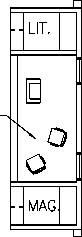
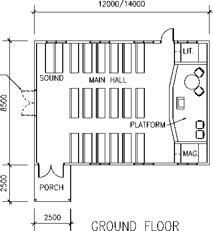
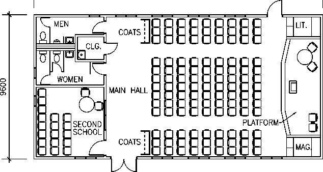
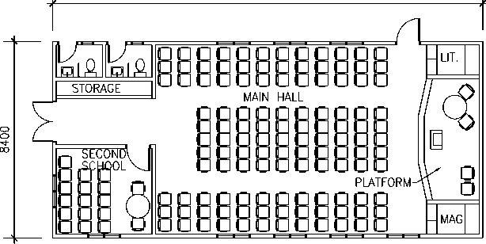
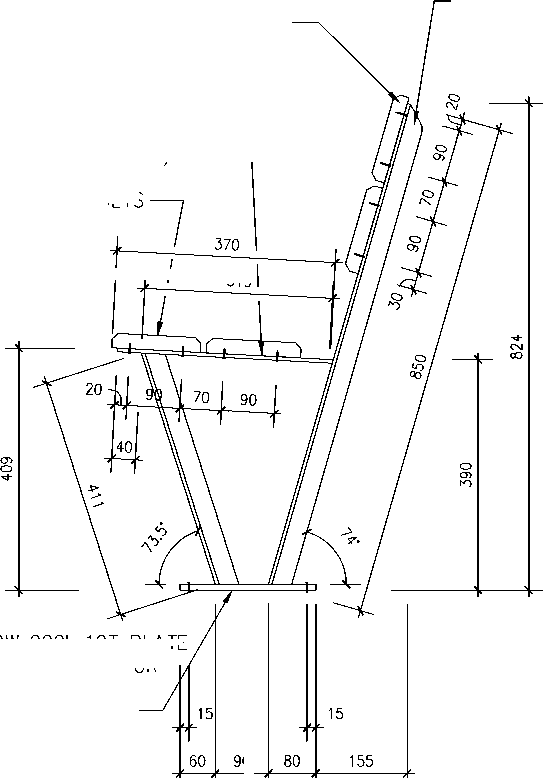
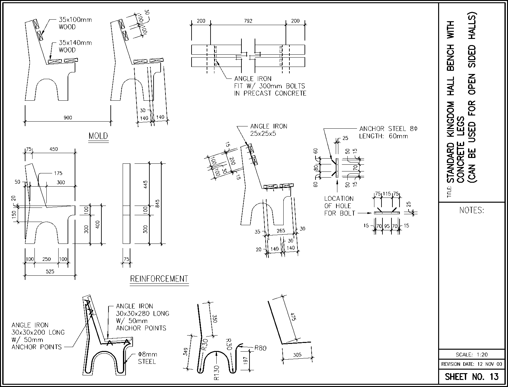

Kingdom Hall Construction Guidelines
For Lands With Limited Resources
November 2008
Section Page
I. Introduction
II. Organize
Kingdom Hall Construction Organization
Establishing Priorities for Other Construction Activities
Organizing a Kingdom Hall Project
III. Design
Developing Standard Kingdom Hall Plans
Determining Kingdom Hall Property Size
IV. Build
V. Maintain
VI. Accounting
Accounting Procedures and Responsibilities
Appendixes
Table of Contents
Kingdom Hall Construction Guidelines 2
1. These Guidelines supplement the general Design/Build Guidelines. They provide additional points for organization of Kingdom Hall construction that is administered by the Design/Build Department under the direction of the Publishing Committee as described in Branch Organization, chapter 22.
2. These Guidelines only apply in specific lands that have been designated by the Governing Body to receive assistance through the Kingdom Hall construction program for lands with limited resources. The provisions outlined are not intended to displace the activities of functioning Regional Building Committees but rather to augment whatever is already being accomplished.
3. The goal of this program is twofold. First, to catch up with the present backlog of much needed Kingdom Halls. And second, to stay caught up by organizing the building work using capable local brothers. This document does not cover every possible situation; rather, it is intended to provide helpful information that can be used to initiate the program. To obtain the maximum benefit from these Guidelines, they should be applied in a reasonable manner with local circumstances in mind. Please request further direction when unusual situations occur. These Guidelines are for use by branch personnel and those directly involved in the program. They are not for general distribution.
4. The material presented describes how this program is coordinated internationally through Regional Kingdom Hall Offices and how it is supervised at the branch level by the various Branch Committees responsible. It explains how volunteers are obtained for the program and how modest standard Kingdom Hall plans are developed based on local building materials and methods. It also gives guidelines for the selection of property and reviews the process of building low cost yet adequate Kingdom Halls that reflect well on our worship.
5. To ensure a unified approach to Kingdom Hall construction, all activities of existing Regional Building Committees and Kingdom Hall Construction Groups will be coordinated by the Kingdom Hall Construction Desk under the immediate supervision of the Branch Committee. This desk will continue to have a close working relationship with the Service Department, which is responsible for considering possible locations for Kingdom Halls, their accessibility, the number of congregations expected to use them, and related circumstances.
6. The construction of a Kingdom Hall should be viewed as the congregation’s project. It is the congregation’s responsibility to do everything they can to participate in their project and thereafter to care for the finished Kingdom Hall’s operating expenses and regular maintenance.
Section I—Introduction
Kingdom Hall Construction Guidelines November 2008
7. DESIGN/BUILD DEPARTMENT: The Design/Build Department directs and monitors the Kingdom Hall construction program for lands with limited resources where assistance has been approved. Branches involved are thus helped to develop an appropriate approach to Kingdom Hall building. The Design/Build Department provides a mechanism to pass on the experience gained from areas with successful construction programs. They can also provide international servants to assist in training capacities where needed.
8. REGIONAL KINGDOM HALL OFFICE: The Publishing Committee has approved five Regional Kingdom Hall Offices to represent the Design/Build Department. These offices are located at the Australia, Brazil, Germany, Mexico, and South Africa branches. They provide organizational assistance to lands in Asia/Oceania, South America, Eastern Europe, Central America and islands of the Caribbean, and Africa, respectively. The work of the Regional Kingdom Hall Office is under the direction of the De-sign/Build Department which functions under the direction of the Publishing Committee.
9. The Regional Kingdom Hall Office is set up in conjunction with an existing branch Engineering Department or a Regional Engineering Office so that technical and/or secretarial support is readily available. In addition to having an appointed overseer, the Regional Kingdom Hall Office also benefits from the oversight of a local Branch Committee representative and the Regional Engineering Office (where applicable).
10. The Branch Committee, Regional Engineering Office oversight (where applicable), and Regional Kingdom Hall Office oversight work together in maintaining a well-organized and efficient office structure that is responsive and appropriately sized to care for regional needs. These brothers ensure that:
(1) Complete job descriptions for office assignments are compiled and maintained.
(2) Qualified personnel (including dedicated personnel for continuity) are identified and trained to care for office assignments.
(3) Sufficient office space, filing space (preferably in a common area), and office equipment is provided.
(4) Technical support (e.g., engineers, architects, and draftsmen) is assigned from within the Regional Engineering Office or branch Engineering Department to assist the Regional Kingdom Hall Office with the review of standard Kingdom Hall building plans or their development where local engineers and architects are not available in a country. The shared use of these qualified brothers will require that their assignments be prioritized. This review or development process may also benefit from consultations with brothers experienced in construction. All involved should be familiar with, and supportive of, the modest objectives of this program.
(5) Traveling office representatives are provided with good support.
(6) New Kingdom Hall projects overseers are recommended when needed and their workloads are balanced.
11. If adjustments in oversight are needed, the Branch Committee will consult with the Design/Build Department for their recommendation. This recommendation is submitted to the Publishing Committee for approval.
12. Regional Kingdom Hall Office responsibilities include the following:
(1) Work in close cooperation with Branch Committees in the countries being assisted to help them take full advantage of these Guidelines and the provisions described herein.
(2) Share new information as it becomes available, answer questions that come from the branches, and respond to their Monthly Kingdom Hall Construction Desk Reports (CN-23). Ensure that Kingdom Hall Construction Status Reports (CN-22) are kept accurate and up-to-date.
Kingdom Hall Construction Guidelines 4
Section II—Organize November 2008
(3) Carefully review standard Kingdom Hall plans and associated materials list (including finishes package). Before approving, determine: (1) if there are labor or maintenance intensive details that can be eliminated and (2) whether average building costs per project in the country reasonably reflect average building costs per project in the region. In addition, compliance with local building standards and safety requirements should be confirmed.
(4) Recommend international servants to participate in the Kingdom Hall program when necessary, and provide, or arrange for, the orientation and training needed for their new assignment.
(5) Recommend Kingdom Hall projects overseer visits to lands within assigned region, doing so at least two months in advance, stating the specific objectives of each visit and the last visit date.
(6) Assist each branch to develop a standard tools/equipment list for their Kingdom Hall Construction Group(s), which may thereafter be carefully reviewed and modified to fit the actual circumstances of each new group.
(7) Assist the Kingdom Hall projects overseers in reviewing requisitions or Non-Literature Branch Orders (AB-3a) for major purchases associated with a branch’s Kingdom Hall building program.
(8) In cooperation with the Kingdom Hall projects overseer, work to ensure that each branch establishes an effective Kingdom Hall maintenance program.
(9) Approve and regulate the use of contractors when needed.
(10) Handle internal review process for relatively inexpensive and straightforward small projects such as missionary homes, literature depots, and small Assembly Halls in lands with limited resources.
(11) Review Kingdom Hall Projects Overseer Visit Reports. This review process may also include experienced brothers in Regional Engineering Office oversight as well as a Branch Committee representative. Thereafter, comments may be provided in a covering memo when forwarding the report to the Design/Build Department.
(12) Where sensitive issues arise in providing assistance to a branch(es), consult with responsible brothers in the Design/Build Department, with the possibility of referral to the Publishing Committee.
13. KINGDOM HALL PROJECTS OVERSEER: A Kingdom Hall projects overseer(s) works out of the Regional Kingdom Hall Office and visits branches in this program. Generally, it is not recommended that Kingdom Hall projects overseer be away from the office for more than two months at a time.
(1) At the beginning of each visit, the projects overseer meets with the Branch Committee to discuss the objectives of his visit. At this meeting, the Branch Committee should likewise bring up any areas of concern. This helps the projects overseer to plan where to direct his efforts during the visit. It also prevents serious matters from arising at the end of his visit when little time is left to address them. Among other things, the projects overseer and Branch Committee review the organization and progress of the Kingdom Hall Construction Desk and Groups, as well as the level of support by congregation volunteers. Sufficient time is also set aside for visiting some of the construction groups working at the various Kingdom Hall building sites. These visits are especially important for groups who may be serving in remote areas.
(2) The projects overseer spends sufficient time in a country to assist in identifying and training qualified local brothers to care for these responsibilities: 1) construction desk overseer, 2) assistant construction desk overseer, 3) construction desk representatives (to pursue property selection and legalization in the field), and 4) construction group overseers. When additional training is required for these brothers, it is preferred that training resources within a country be utilized.
(3) At the conclusion of a visit, the Branch Committee should carefully review the Kingdom Hall Projects Overseer Report and provide their comments for inclusion in the report.
14. BRANCH COMMITTEE: The Branch Committee is responsible for the implementation, organization, and functioning of the program for their country as outlined in these Guidelines. While the Kingdom
Section II—Organize
Kingdom Hall Construction Guidelines November 2008
Hall Construction Desk is directly involved in the construction of Kingdom Halls, other Bethel departments such as the Service and Legal departments (if available) may be called upon to fill a supporting role. The responsibilities of the branch Accounting Office are described in Section VI, “Accounting.” The Branch Committee will determine the degree to which other departments become involved in providing needed support and ensure their cooperation. The Branch Committee is also responsible for the following:
(1) Review and approve Kingdom Hall construction volunteer applications (A-25). Review Kingdom Hall construction servant applications (A-12) before recommending appointment to the De-sign/Build Department. The Design/Build Department, in turn, provides their recommendation to the Personnel Committee who provides final approval of all A-12 applicants.
(2) Review the approved number of Kingdom Hall Construction Groups and servants in consultation with the Kingdom Hall projects overseer, and recommend adjustments when needed.
(3) Review and approve each Kingdom Hall Financing Request (CN-16).
(4) Review and approve each Budget Approval and Project Expenditure Summary (CN-12).
15. The Branch Committee should determine whether the branch Accounting Office, Kingdom Hall Construction Desk, or Kingdom Hall Construction Group should be made responsible for the disbursement of funds and bill payments. The congregation should not be used as an entity for disbursements and bill payments.
16. KINGDOM HALL CONSTRUCTION DESK: A Kingdom Hall Construction Desk is established at each branch in connection with this program and operates under the direction of the Branch Committee. Since the operation of this desk is a branch function, typically those serving with it do so as Bethel family members. This desk should be adequately staffed according to the needs in the country. The construction desk cares for the following responsibilities:
(1) Works closely with the Service Department to determine where Kingdom Halls are needed and their priority, thus developing a master plan. Based on this master plan, the construction desk is responsible for organizing and administering construction.
(2) Arranges for well-prepared meetings with elder bodies.
(3) Ensures that a congregation requesting assistance is provided with a list of steps that the congregation needs to take before and during construction.
(4) Makes certain that all legal requirements are met for property ownership in accord with local circumstances and trains desk representatives in the property selection and legalization process.
(5) Ensures that ongoing training is provided to construction servants and volunteers. As necessary, locates local professionals to do design and construction work.
(6) Makes sure that planning and construction approvals are obtained.
(7) Ensures that the Kingdom Hall Property Evaluation (CN-13), the Kingdom Hall Financing Request (CN-16) with attached congregation resolutions, the proof of ownership, the financial survey, and the project materials list are accurate and complete. Prepares and submits the Budget Approval and Project Expenditure Summary (CN-12), including all aforementioned documents, for review and approval by the Branch Committee.
(8) Reviews the Kingdom Hall Construction Journal (S-26) received from the construction group overseer each month and provides the Accounting Office with a copy for updating their Kingdom Hall Construction and Overhead Ledgers.
(9) Confirms that a construction schedule is prepared for each project so that local elders can be informed when volunteers are needed and how many. This will also facilitate the order and delivery of materials before construction starts.
(10) In cooperation with the Service Department, ensures that congregations do not purchase property, perform major renovation, or begin a new construction project without prior consultation with the construction desk and prior Branch Committee approval, whether or not a need for Kingdom
Kingdom Hall Construction Guidelines 6
Section II—Organize November 2008
Hall financing is anticipated. Congregations submitting requests should provide a few photographs to confirm the actual condition of their present meeting place. Does an urgent need really exist, or is it simply a desire to upgrade or relocate an otherwise suitable facility? Minor renovation, such as the replacement of worn finishes, is to be considered maintenance and thus the financial responsibility of the congregation.
(11) Customizes the Kingdom Hall Maintenance/Safety Checklist (CN-14) according to local conditions. Ensures that congregation elders are provided with hands-on maintenance training, incorporating the use of the adapted CN-14, at their completed Kingdom Hall. In cooperation with the Service Department, provides traveling overseers, serving in areas where new Kingdom Halls are built, with a half-day of training and orientation to ensure they know what to look for when confirming appropriate maintenance follow-through on the part of elders during their regular congregation visits.
(12) Submits a Monthly Kingdom Hall Construction Desk Report (CN-23) through the Branch Committee to the Regional Kingdom Hall Office (copy to Design/Build Department).
(13) Maintains an up-to-date Kingdom Hall Construction Status Report (CN-22) outlining the description, progress, and cost for Kingdom Halls and small projects.
17. KINGDOM HALL CONSTRUCTION DESK OVERSEER: The Branch Committee, in consultation with the Kingdom Hall projects overseer, appoints the construction desk overseer. Although no one can be expected to excel in all Christian qualities, the desk overseer should display good balance in his reasonableness, organizational ability, and communication skills. He should demonstrate initiative and have a reputation for following through. He must be able to delegate responsibility. If a qualified local brother is not available, the branch should consult with the Regional Kingdom Hall Office.
18. In addition to supervising the work of the Kingdom Hall Construction Desk and Group overseers, the construction desk overseer is to arrange for regular group visits by himself, by a Branch Committee member, or by another qualified construction desk representative, as approved by the Branch Committee. He ensures that the group overseers receive needed training and are adequately caring for the spiritual and physical needs of the groups and that good communication is being maintained between the desk and groups. He also confirms that weekly group safety meetings are being held and that group members are receiving training to qualify for additional responsibilities.
19. REGIONAL BUILDING COMMITTEE: Functioning Regional Building Committees operate under the direction of the Kingdom Hall Construction Desk. Their activities may be assigned in line with their experience and availability. For example, they may be assigned to meet with local elder bodies, to help with property selection and legalization matters, or to share in actual building. Regional Building Committees are to care for their assignments in harmony with these Guidelines using the forms associated with this program.
20. KINGDOM HALL CONSTRUCTION GROUP: Kingdom Hall Construction Groups are composed of long-term Kingdom Hall construction servants (A-12) and short-term Kingdom Hall construction volunteers (A-25). These groups work under the guidance of the Kingdom Hall Construction Desk. Each group will have an appointed overseer and assistant. Generally, two or three Kingdom Hall construction servants are assigned to each group to ensure continuity in oversight and training. Initially, one or two international servants may take the lead in these groups to provide necessary training to local brothers working with them. In certain instances, depending on the skills and the support available in the local congregations, as many as eight Kingdom Hall construction servants may be required. Larger groups tend to discourage active participation on the part of the local congregation in what is really their project and should therefore be avoided. If needed, an adjustment in the approved number of construction groups and servants may be recommended by the Branch Committee, in consultation with the projects overseer. Typically, no more than one group should be formed for every 50 Kingdom Halls presently needed (70 in larger countries), while taking into consideration new Kingdom Halls that will be needed because of annual publisher growth. After eliminating the backlog of Kingdom Halls presently needed, one group can be retained for every 6 to 12 Kingdom Halls needed due to annual growth. It is better to have fewer groups that are well organized and experienced than to have several groups with low proKingdom Hall Construction Guidelines Section II—Organize ductivity. The Kingdom Hall Construction Desk works closely with the Service Department to ensure that the various Kingdom Hall Construction Groups benefit from a congregation visit of the circuit overseer.
21. KINGDOM HALL CONSTRUCTION GROUP OVERSIGHT: The Kingdom Hall Construction Group overseer and his assistant are assigned by the Branch Committee in consultation with the Kingdom Hall Construction Desk and Kingdom Hall projects overseer. The group overseer should be spiritually mature, should have a construction background, should demonstrate good personal organization, and should deal well with people. His ability to follow through on instruction provided, to delegate responsibility, and to be patient when training others is essential to the success of a project and the day-to-day morale of fellow group members. If a qualified local brother is not available, the branch should consult with the Regional Kingdom Hall Office.
22. In addition to supervising the work of a Kingdom Hall Construction Group and congregation volunteers at the project site, the construction group overseer is responsible for looking after the spiritual needs of group members. This includes arranging for a Monday evening Watchtower study and daily text discussions. He ensures that group members are able to enjoy an active share in Christian meetings and field service with the local congregation. He also holds weekly meetings with the group to coordinate a quality control and safety program and to discuss the progress of the work. He is concerned with providing the training necessary for brothers to care well for their assigned responsibilities. He identifies and trains those with a potential for handling greater responsibility, including oversight, and for possibly later serving on a Regional Building Committee. He provides hands-on maintenance training to congregation elders who will take the lead in a finished Kingdom Hall’s maintenance program.
23. The group overseer is also responsible for developing the project materials list for each project. This information is used by the construction desk to prepare the Budget Approval and Project Expenditure Summary (CN-12). He also works closely with the Kingdom Hall Construction Desk to prepare and monitor each project schedule. He carefully tracks project costs and overhead costs by reviewing the standing of the budget at the end of each month and when the project is complete. He makes certain that a Kingdom Hall is complete (including punch list items) before moving the entire group on to the next project. In this way, a dedication date can be set in a timely manner.
24. KINGDOM HALL CONSTRUCTION SERVANT: Local brothers who have served a minimum of two months as Kingdom Hall construction volunteers can volunteer to serve on a long-term basis with construction groups within their home country. They can do this by submitting an Application for Membership in the Order of Special Full-Time Servants and of Kingdom Hall Construction Servants (A-12) through their Congregation Service Committee to the Branch Committee, generally no later than the end of their initial three-month assignment. If the Branch Committee, in cooperation with the Kingdom Hall Construction Desk, has an assignment for the applicant, the application may be forwarded to the Design/Build Department. Final approval of the application will be given by the Personnel Committee. Kingdom Hall construction servants may also assist with disaster relief and other approved small projects within the country.
25. Kingdom Hall construction servants should be spiritual men and women, in good health, and capable of doing hard physical work. (See Branch Organization 1:92-97.) While reasonable provision will be made for their health care, this would not apply to preexisting health conditions. Single persons and married couples without minor children to care for may apply. The age requirements are generally 19 to 55 years of age. Applicants must be baptized for one year. Those approved for this category of special full-time service receive the same monthly reimbursements and PEA as members of the Bethel family in the country to which they are assigned. The start date for an approved A-12 applicant is the date of his appointment letter. This start date is not retroactive for uninterrupted service unless a Kingdom Hall construction volunteer is also serving as a regular pioneer. In any case, the provision for PEA is not retroactive. The branch cares for food and accommodations. Vacation time is accrued in the same manner as the Bethel arrangement, considering age or years of full-time service. Kingdom Hall construction
Kingdom Hall Construction Guidelines 8
Section II—Organize November 2008
servants may also receive whatever additional financial provision is made available to Bethel family members to offset travel expenses for annual conventions.
26. Field service reporting, judicial matters, and the recommendation and appointment process for Kingdom Hall construction servants to serve as elders and ministerial servants should be handled in a manner consistent with the direction provided in the Service Committee’s circular letters GAO:AT November 13, 2000, and March 1, 2001. Kingdom Hall construction servants are appointed on a continuous basis as congregation elders or ministerial servants. Therefore, they will not need to be reappointed when relocating within their branch territory. However, a letter of introduction should be provided for each new congregation that they serve. Kingdom Hall construction servants should be provided with, as well as encouraged to read carefully, the Guidelines for Kingdom Hall Construction Servants, which provides more details on program requirements, personal provisions, and work schedules. It is expected that they will comport themselves in harmony with these Guidelines. Personal copies of the Guidelines for Kingdom Hall Construction Servants should be returned to the Kingdom Hall Construction Desk when servants discontinue their service.
27. Kingdom Hall construction servants are to receive a review after their first ten months of service to ensure that they continue to be qualified. It is preferable for these reviews to be conducted by elders from the Kingdom Hall Construction Group and Desk who are familiar with the new group members. It may be practical to conduct such reviews during regularly scheduled group visits by the Kingdom Hall Construction Desk. In addition, a Kingdom Hall Construction Servant Evaluation (CN-26) should be completed annually in accord with the instructions on the form.
28. KINGDOM HALL CONSTRUCTION VOLUNTEER: Local brothers with certain abilities and/or availability to serve on a short-term basis with full-time Kingdom Hall Construction Groups, on Kingdom Hall projects other than their own, may submit an Application for Kingdom Hall Construction Volunteer Program (A-25) through the Congregation Service Committee to the Branch Committee for final approval. Assignment duration may vary from two weeks to three months with a possible extension of up to three additional months for a maximum total assignment length of six months. Where circumstances require it, skilled brothers who can regularly make themselves available on a part-time basis may also use the A-25 application.
29. The Kingdom Hall construction volunteer application enables the Kingdom Hall Construction Desk to know who are available and what their level of experience is. It also provides a way to make sure that applicants qualify spiritually and are in good standing in their respective congregations. Those approved are generally able to serve in a location away from home for an initial period of from two weeks to three months. If necessary, assistance may be given to offset travel expenses. After the Branch Committee approves the applications, the Kingdom Hall Construction Desk keeps a file of approved applications to draw from as needed. Kingdom Hall construction volunteers may also assist with disaster relief efforts and other approved small projects within the country.
30. Kingdom Hall construction volunteers should be spiritual men and women in good health and capable of doing hard physical work. The age requirements are generally 19 to 55 years of age. Applicants must be baptized for one year. If needed, the branch provides them with housing and food for the duration of their assignment. By distributing A-25 applications in the area where a Kingdom Hall(s) is to be built in the near future, it may be possible for those approved to commute from their own homes in support of the project(s). This will also help to ensure that availability dates on the applications are relatively current. When assignments exceed a full calendar month, the volunteer may request the same monthly reimbursement as Bethel family members receive in their country. The reimbursement may be prorated for incomplete months. However, such ones are not considered full-time servants unless they are already regular pioneers. If regular pioneers are skilled and others with the needed skills are not available, the regular pioneers can be used and may be credited up to 70 hours per month while serving as Kingdom Hall construction volunteers. A Kingdom Hall Construction Volunteer Evaluation (CN-17) should be completed by the group overseer and returned to the Kingdom Hall Construction Desk for each assignment. If the assignment is extended beyond three months, one report should be submitted at the end of the initial three months and a second at the end of the extension period. This
Section II—Organize
Kingdom Hall Construction Guidelines November 2008 information will be helpful if consideration is given to future construction volunteer assignments or the individual applies as a construction servant.
31. INTERNATIONAL SERVANT: Where circumstances require, international servants may be temporarily assigned to assist. Their primary responsibility is to identify and train local brothers with a potential to fill key roles in a branch’s building program. When doing so in areas isolated from the branch, they are to have their personal needs cared for with the following points in mind:
(1) It is preferable not to isolate international servants in their assignments. Therefore, careful attention should be given to forming balanced groups that can work together so that a mutual interchange of encouragement may be possible.
(2) Site visits from Branch Committee members and/or the projects overseer for spiritual upbuilding should be scheduled as needed.
(3) The branch should provide reliable transportation and communication services for health and safety reasons.
(4) The branch should ensure that adequate housing, quality food, and safe drinking water are provided.
(5) International servants may receive a simplified language course from the branch, when needed.
32. CONGREGATION VOLUNTEER: In well-prepared preconstruction meetings with congregation elders, construction desk and group representatives should place due emphasis on enlisting the full volunteer support of congregation members for what is actually their building project. At these meetings, the presence and involvement of the city overseer (and the circuit overseer, if he is in the immediate area or where practical and it will not interfere with his schedule for the week) can reinforce this important message. The congregation’s active participation helps to foster a sense of responsibility toward the new facility, including its continued upkeep and maintenance. With good coordination it should be possible for the Kingdom Hall Construction Desk and/or Group to inform a congregation of the start date for their project well in advance. Congregation elders should be advised how many volunteers are needed and when. In turn, advance scheduling will provide congregation elders with an opportunity to determine what skills may be available among the brothers and to build up enthusiasm for the project. Congregation members do not need to complete an application to participate in their own project. Publishers in good standing with the congregation who are 17 years of age or older are encouraged to volunteer.—See heading “Assignment Descriptions for Congregation Volunteers,” paragraph 114.
33. If a sufficient number of volunteers are not available from the local congregation, a neighboring congregation(s) may be invited by the Kingdom Hall Construction Desk or Group to participate. While no application is necessary, only those who have the approval of their Congregation Service Committee may be invited. Neighboring congregation elders should be advised how many volunteers are needed and when. One of the elders or a responsible ministerial servant from the invited neighboring congregation should be on hand to provide assistance in identifying these volunteers at the construction site.
34. Too many volunteers on site, especially those who are unfamiliar with construction activities, may be difficult to adequately supervise and thus result in unsafe working conditions. Therefore, the number of local congregation volunteers or those invited from the neighboring congregation(s) should be carefully monitored by the construction group overseer.
Kingdom Hall Construction Guidelines 10
Section II—Organize November 2008
35. ESTABLISH THE NEED: In cooperation with the Service Department, determine how many new Kingdom Halls (including unfinished projects) are needed at present. Do what is possible to maximize the congregation-to-Kingdom-Hall ratio. Typically, an average of 1.5 congregations per Kingdom Hall or higher is a reasonable goal. Therefore, new Kingdom Halls should be centrally located for use by multiple congregations, especially in cities and towns. In rural areas, where reliable public transportation may not be available or affordable, travel distance should be considered. However, where practical the Service Department will consolidate smaller congregations. Generally, we do not recommend providing Kingdom Halls for congregations with less than 30 publishers unless actual meeting attendance is significantly higher and a sufficient number of qualified elders are available to take the lead. In addition, it should be determined how many existing Kingdom Halls are in need of major renovation or replacement. (Minor renovation such as the replacement of worn finishes is to be considered maintenance and thus the financial responsibility of the congregation.) Consult branch records to determine how many new congregations are being formed each year, and estimate how many Kingdom Halls will be needed to keep up with this growth. With these factors in mind, develop a master plan that provides general locations for all new Kingdom Halls presently needed and that prioritizes their construction along with the major renovation or replacement of existing Kingdom Halls. While this master plan is to be completed during program implementation, it should be reviewed annually and updated as needed to reflect the additional Kingdom Halls required due to publisher growth. The master plan should remain flexible with options based on what properties actually become available.
(1) In developing the construction organization, typically no more than one construction group should be formed for every 50 Kingdom Halls presently needed (70 in larger countries). Additional Kingdom Halls that will be needed due to publisher growth should also be taken into consideration. Of course, the approved Kingdom Hall construction budget, as assigned annually by the Publishing Committee, has a bearing on the size of a branch’s program. These factors must also be weighed to adequately staff the Kingdom Hall Construction Desk. The staff assigned to the construction desk can be moderated when existing branch departments (e.g., Legal, Accounting) are utilized to support the construction desk in their respective areas of expertise. This is preferable to duplicating the functions of another department.
(2) If needed, construction desk representatives may be assigned to pursue property selection and legalization on a full-time basis. Since these brothers primarily work in the field, they are generally appointed as construction servants. Often they reside in the area where they are assigned to work. The property selection and legalization process should stay approximately six months ahead of construction scheduling. This allows sufficient time for preparing and organizing a project before the group arrives. Identify various regions where Kingdom Hall Construction Groups are required. Construction desk representatives may also be used to visit the construction groups and conduct well-prepared preconstruction meetings with congregation elders. New representatives can receive training by working along with more experienced and effective representatives.
(3) When it is determined that the backlog of presently needed Kingdom Halls will be eliminated in a few years, the size and makeup of the construction organization should be reviewed in consultation with the projects overseer so that gradual adjustments can be made. Generally, one construction group may be retained for every 6 to 12 Kingdom Halls needed due to annual growth, provided funds are available. The construction desk is to be scaled back in accord with its diminishing workload, keeping in mind the need to properly oversee any remaining construction groups and monitor Kingdom Hall maintenance. Where little publisher growth is expected and where it is practical, future needs can be cared for by developing and forming one or more Regional Building Committees, making use of former Regional Building Committee members and Kingdom Hall construction servants and volunteers.
36. BUILD NEW OR RENOVATE: In some lands, renovating existing buildings and converting them into Kingdom Halls may be advisable. For example, there may be considerable opposition to applications for planning approval for new buildings. However, there are certain disadvantages to remodeling
Section II—Organize
Kingdom Hall Construction Guidelines November 2008 an existing building. These may include having to make the best of an unsatisfactory layout, dealing with inadequately designed structural members, unknowns about the building that are revealed during remodeling, and high maintenance because of old materials approaching the limit of their expected lifetime. These factors may represent a higher cost than building new. In addition, changing the purpose of the building may also conflict with local code requirements.
37. FINANCING: The Branch Committee and the Kingdom Hall projects overseer should review sections of Branch Organization, chapter 22, that pertain to building and financing Kingdom Halls with the Kingdom Hall Construction Desk. The branch Accounting Office should be invited to explain current branch accounting instructions that pertain to Kingdom Hall financing along with the supplementary direction in Section VI, “Accounting.” The forms Budget Approval and Project Expenditure Summary (CN-12), Kingdom Hall Property Evaluation (CN-13), and Kingdom Hall Financing Request (CN-16) should also be carefully considered. All should clearly understand the criteria for determining if a congregation will be required to repay a loan (generally within 20 years), or make resolved monthly contributions when it is necessary for the branch to assume ownership as set out under the subheading “Ascertain the Financial Needs for the Project,” paragraphs 76-83.
38. The Kingdom Hall Financing Request (CN-16) has a number of questions to assist elders in this matter. Question 9 states, “Has a survey of the congregation been taken to determine how much they can contribute each month?” The results of this financial survey are to be handled by elders in a confidential manner. It is intended to help them in determining if the congregation can afford to make payments on a possible loan. That is why question 13 asks, “If the figures above indicate that the congre-gation(s) cannot repay a loan, have they passed a resolution to contribute what they can monthly toward the use of the Kingdom Hall, accepting responsibility to care for operating and maintenance costs?” Of course, for many countries in this program, the survey will indicate that congregations are not in a financial position to repay loans. For others, there may be legal impediments that prevent a congregation from forming a corporation or board of trustees, which may mean that the congregation is unable to become legal owner of the building and property. In these cases, the branch will own the Kingdom Hall and property with congregations making a fixed monthly contribution toward the use of the Kingdom Hall by means of a congregation resolution.
39. The survey is also intended to help the elders assess what amount a congregation can realistically contribute, or repay in the case of a loan, on a consistent monthly basis. Some in the congregation may be overly optimistic in estimating what they are individually able to contribute in the survey. Experience has shown that 50 percent of the financial survey is typically a more accurate reflection of what a congregation may actually be able to remit on a monthly basis, either when repaying a Kingdom Hall loan or making resolved contributions for its use. The formula in question 9 of the CN-16 can thus be used as a guide, not a hard and fast rule, by the elders in preparing the resolution for presentation to the congregation.
40. It would be appropriate to emphasize to all congregation members that when resolving to repay a loan or make monthly contributions, the congregation is at the same time accepting responsibility to care for the ongoing operating and maintenance expenses of the Kingdom Hall when completed. As experience is gained, the construction desk or group representatives should be able to provide the congregation with an estimate of the typical monthly or yearly operating and maintenance expenses for any given set of standard plans.
41. Congregation remittances for project financing, repayment of loans, and resolved monthly contributions should be clearly identified on the Contribution Remittance Form (S-20). For resolved monthly contributions, the congregation should write: “Resolved monthly contribution to Kingdom Hall Fund for use of branch-owned Kingdom Hall” on the line designated “Other Contribution.” However, resolved monthly contributions for branch-owned Kingdom Halls are to be derived from the congregation’s general contributions. These monies are not to be derived from the congregation’s contributions to the branch Kingdom Hall Fund.
42. In this way, the branch can monitor what is actually being contributed each month in relation to a congregation’s resolution, which is attached to the Kingdom Hall Financing Request (CN-16). The
Kingdom Hall Construction Guidelines 12
Section II—Organize November 2008
branch should acknowledge the contributions in writing and this is to be read each month to the congregation. The elders and congregation will then be aware of whether or not they are contributing the fixed amount that was originally agreed upon in their standing resolution. As announced in the United States January 2002 Our Kingdom Ministry, page 3: “All acknowledgments of contributions for the [branch] Kingdom Hall Fund and the worldwide work are to be read to the congregation.” This directive would also apply to acknowledgments for resolved monthly contributions.
43. Congregations receiving financial assistance should be helped to appreciate that a resolution to make monthly contributions is viewed with the same seriousness as a resolution to repay a loan. It is the individual commitment of congregation members inherent in a resolution, rather than any legal obligation accompanying Kingdom Hall loans, that carries the greater responsibility.—Matthew 5:37.
44. Unless specifically instructed by the Publishing Committee, loan arrangements that have been worked out with congregations prior to implementing this program in your country should not be cancelled as long as congregations are (1) able to repay a loan within approximately 20 years and (2) capable of assuming legal ownership of the Kingdom Hall and property either directly or through a written trust agreement with the branch. Such agreements need to be legally acceptable in the country and clearly indicate that the branch is trustee and the congregation is beneficiary. The wording should provide for the distribution of assets when the trust terminates (or building and property is sold) and indicate that the congregation is responsible for Kingdom Hall maintenance and operating expenses during the life of the trust. The title to the property is held in the name of the trustee (e.g., Watch Tower), using a designation reflecting the trustee status (e.g., Watch Tower in Trust for the Johnstown Congregation), or in the name of the trust (e.g., Johnstown Kingdom Hall Trust). In these cases, congregations should continue to make monthly loan payments. However, adjustments can be made to the amount submitted monthly if these loan payments are a burden to the congregations.
(1) For congregations formerly repaying a loan that are being newly placed under the monthly contribution arrangement, the steps outlined in paragraphs 38 and 39, including a financial survey of the congregation, should be followed. Although the congregation has been relieved of its remaining indebtedness to the branch, this process will assist elders in determining what the congregation is reasonably able to contribute on a monthly basis for the use of the Kingdom Hall. Thereafter, the fixed amount recommended by the elders as a monthly contribution from the congregation’s general contributions should be presented to the congregation for adoption in the form of a resolution.
45. DETERMINE WHAT MUST BE DONE IN ORDER TO OWN SUITABLE PROPERTY: Before committing to purchase any property, consult with a knowledgeable lawyer or other legal advisor and determine what documents are locally acceptable to prove ownership. Obtain copies of the pertinent regulations and find out what must be done to obtain the right to build a new Kingdom Hall. Using qualified brothers, develop a procedure to ensure that prior to purchase all properties are verified as being legally and physically suitable for a Kingdom Hall. Designate those brothers who will check on the suitability of land for a given region. Determine if the renovation of existing buildings must meet similar requirements. If there are any questions as to acceptable ownership of property or a concern for establishing a right to build, please consult with the Regional Kingdom Hall Office.
46. FIND QUALIFIED BROTHERS TO FILL KEY ROLES: Several key roles need to be filled in a branch’s Kingdom Hall building program. These roles should be filled by spiritually mature local brothers who can provide loving and effective oversight. The identification and training of responsible local brothers is vital for the long-term success of a program. These brothers can be used to care for the following responsibilities:
(1) Determine the suitability of land for a Kingdom Hall. When necessary, a Kingdom Hall construction servant(s) acting as a construction desk representative may be assigned to pursue the property selection and legalization process on a full-time basis.
(2) Establish boundaries, verify titles, and prepare topographical plans.
(3) Provide legal advice (e.g., lawyers) to verify that proper ownership has been obtained.
Section II—Organize
Kingdom Hall Construction Guidelines November 2008
(4) Design (e.g., architects and engineers) and prepare standard construction drawings in accord with the modest designs provided in these Guidelines. Submit drawings to the local authorities.
(5) Compile a list of needed materials from construction drawings (including quantities and prices), negotiating their purchase. Coordinate receipt, transport, storage, and security of materials.
(6) Accurately account for and track expenditures.
(7) Site works, establishing connections for various utilities (water, electrical, sanitary, storm water removal, telephone, and gas); clear and prepare the construction area, place foundations, and care for landscaping. This may include driveways and parking where applicable.
(8) Construction work, using local building methods.
47. CONTRACTORS: The initial concept of using a contractor and the extent to which contractors will be utilized in a country for Kingdom Hall construction should be approved by the Regional Kingdom Hall Office. Consideration may be given to the cost-effectiveness of a contractor where relatively few Kingdom Halls are needed in a country, or in an isolated area of the country, or where the legal or political climate makes it advisable.
(1) Where the use of contractors is approved, a standard contract should be developed by the branch construction desk and local legal representation. This standard contract is to be reviewed and approved by the Regional Kingdom Hall Office. The contract should take into consideration our concern for safe work practices, prohibit the consumption of alcoholic beverages, and discourage smoking by employees during working hours. This is especially a concern where the congregation will be providing volunteer assistance to the contractor.
(2) The contract should allow for on-site quality/safety control inspections or oversight by the branch and should address local construction liability/insurance concerns.
(3) The standard plans and associated materials list that are to be utilized by a contractor should contain an appropriate level of detail. More detail may be required by a contractor that is unfamiliar with our program and its objectives than an experienced construction group. Especially would this apply to the selection of construction materials and finishes. For this reason, standard plans and associated materials list that are to be used by a contractor should be reviewed by the Regional Kingdom Hall Office for required detail.
(4) It should be kept in mind that only unpaid volunteers are insured under the Kingdom Hall Assistance Arrangement (KHAA), thus affording a measure of protection for the branch against possible liability in case of a construction incident resulting in personal injury.
48. DEVELOP A FEW STANDARD KINGDOM HALL PLANS: Based upon locally available materials and equipment, the size and needs of the local congregations, and the designs supplied in these Guidelines, the branch should have qualified brothers develop two or three sets of plans for each environment (e.g., city, suburb, and rural). The proposed standard plans should be sent to the Regional Kingdom Hall Office for review and approval before they are used. If local brothers are not available, design assistance can be contracted from reputable local firms or requested from the Regional Kingdom Hall Office. If there appears to be a special need for a custom design (or deviating from the standard finishes package), the Kingdom Hall Construction Desk should discuss this with the Branch Committee, who will then contact the Regional Kingdom Hall Office before proceeding.—See heading “Developing Standard Kingdom Hall Plans,” page 22, and Appendix A, “Modest Kingdom Hall Designs.”
49. DEVELOP CONSTRUCTION LABOR FORCE: Explain the basic points of the program to the congregations and how to participate in it. This can be done by means of Our Kingdom Ministry articles and material for inserts. Special letters and meetings with the elders in congregations anticipating a building project can provide more detailed information. Before brothers are invited to participate in the program, first establish that they are qualified spiritually. Those available to provide full-time assistance on a short-term basis, as described in paragraphs 28-30, should fill out Kingdom Hall construction volunteer (A-25) applications. These are submitted through the Congregation Service Committee to the
Kingdom Hall Construction Guidelines 14
Section II—Organize November 2008
Branch Committee for review and approval. The Kingdom Hall Construction Desk should organize approved applications according to trades, regions, and availability.
50. For the formation of the first Kingdom Hall Construction Group, a nucleus of trained brothers is needed. Determine who is available from among those approved to serve as Kingdom Hall construction volunteers. If some of these brothers have proved themselves valuable workers on previous projects, they can submit Applications for Membership in the Order of Special Full-Time Servants and of Kingdom Hall Construction Servants (A-12) through their Congregation Service Committee to the Branch Committee. When an assignment becomes available, the Branch Committee may recommend their appointment to the Design/Build Department. After an initial review, the Design/Build Department will forward their recommendation to the Personnel Committee for final approval. When forming additional construction groups, qualified and experienced Kingdom Hall construction servants should be included from an already well-functioning group(s).
51. Those who will be working on their own congregation’s Kingdom Hall project need the approval of their body of elders. They are not required to fill out an application. Qualified brothers from neighboring congregations who desire to provide their part-time assistance may do so on an invitation basis only.
52. OBTAINING THE NEEDED CONSTRUCTION MATERIALS: The following sequence of activities needs to take place for construction materials to be on site at the proper time.
53. Generic Materials List: The generic materials list is a list of materials including quantities and prices. Qualified tradesmen should be used to prepare a generic materials list for each set of approved standard plans (including finishes). Purchasing agents or those familiar with local prices may then provide a cost for each item listed. The Kingdom Hall Construction Desk should analyze options and identify potential areas where costs can be reduced.
54. Project Materials List: Based on the generic materials list, the construction group overseer prepares the project materials list with the actual project and selected property in mind. The project materials list will include items specific to a certain site or that typically vary from site to site (e.g., job setup costs, site works). A copy of the project materials list should be attached to the Budget Approval and Project Expenditure Summary (CN-12).
55. Budget Approval and Project Expenditure Summary (CN-12): To establish a budget, the costs for all construction items on the project materials list are compiled according to major cost elements and then entered into the corresponding row of the “Approved Budget” column on the Budget Approval and Project Expenditure Summary (CN-12). To associate these items with the appropriate major cost elements, helpful information is provided in the chart “Transaction Code (TC) Description” on the CN-12. Once the cost estimate on the CN-12 is reviewed and approved by the Branch Committee, it represents the approved budget for a project. The CN-12 is thereafter used to confirm that sufficient funds are on hand before starting a project and as a cost-tracking guide for monthly expenditures during a project. When financing is needed, the CN-12 is also used to verify the amount being requested.
56. Purchasing: The Kingdom Hall Construction Desk, or responsible brothers appointed to work under it, will be responsible for the purchase of materials based on the Budget Approval and Project Expenditure Summary (CN-12) and attached project materials list. They will also verify any invoices submitted and care for payment of bills. Where practical, the branch Purchasing Department and/or Accounting Office should be used for these activities.
57. Receiving of Materials and Equipment: (Immediately check the following as items are received.)
(1) The materials/equipment are what were actually ordered.
(2) The proper quantity and quality was received.
(3) The price is what was originally quoted.
(4) Nothing is damaged.
Section II—Organize
Kingdom Hall Construction Guidelines November 2008
58. Any deviation should immediately be reported to the group overseer, the purchaser, and to the one responsible for making payment. In this way, the matter can be corrected before payment is made.
59. Storage of Materials: Be sure that stored items on a Kingdom Hall site are protected against damage, water, and theft. The storage area should be secured on a 24-hour basis. At times, materials for more than one Kingdom Hall project are stored in a central location. If so, accurate records must be kept showing what was received and what items have been released for a specific project.
60. Equipment and Vehicles: Consideration should be given to the cost-effectiveness of renting vehicles or using reliable delivery services in comparison to purchasing, maintaining, and assuming the added risks involved with operating larger vehicles that will primarily be used for the movement of heavy materials and equipment. If the use of delivery services or renting is not practical, can larger vehicles be shared between construction groups? Requests for major purchases, including vehicles for the movement of personnel and light materials, should be accompanied by comments from the Kingdom Hall projects overseer. Although the Kingdom Hall projects overseer may have provided his comments on the concept of a major purchase during his visit, a full description of the actual items, their cost, and intended uses should be provided to the Regional Kingdom Hall Office for review before submitting the requisition or Non-Literature Branch Order (AB-3a) to the Publishing Committee for approval.
61. INSURANCE: All Kingdom Halls, whether owned by the Branch or the congregations, should be enrolled in the Kingdom Hall Assistance Arrangement (KHAA). The KHAA provides property and general liability protection. Branches are provided with instructions to set up and administer the KHAA for their branch and its congregations. For detailed information regarding this program, please consult the latest information on file or write for direction.
Kingdom Hall Construction Guidelines 16
Section II—Organize November 2008
62. At times, a pressing need may arise for assistance from the construction desk and groups, from Kingdom Hall projects overseers, and from the Regional Kingdom Hall Office in regard to Kingdom Hall apartments or expandable Kingdom Halls. Financing for the Kingdom Hall apartments and expandable Kingdom Halls is to be derived from the annually assigned Kingdom Hall construction budget.
63. A need for assistance from the construction desk and groups, Kingdom Hall projects overseers, and the Regional Kingdom Hall Office may also arise with small projects including small Assembly Halls, missionary homes, disaster relief (e.g., major home repair), literature depots, and other modest projects. Small projects require individual approval from the appropriate Governing Body committee(s) and are not financed with funds allocated for Kingdom Hall construction. While the following guidance is provided with the need for Kingdom Hall apartments, expandable Kingdom Halls, and small projects in mind, the primary objective of this program remains that of building Kingdom Halls.
64. KINGDOM HALL APARTMENTS: When special circumstances require the inclusion of an apartment, such Kingdom Hall apartments should be standardized and modest. However, they are not to be incorporated into standard Kingdom Hall plans.
(1) Caretaker Apartments: Caretaker apartments represent additional work for the construction group and can substantially increase the cost of a project. In the broader context, these are also factors that slow the progress of the building program overall. Additionally, experience has shown that in the absence of a round-the-clock presence by the caretaker, caretaker apartments do not significantly improve Kingdom Hall security. At the same time, we do not want our brothers who serve as caretakers to place themselves in danger trying to protect Kingdom Hall property from determined thieves or vandals. For these reasons, caretaker apartments should generally not be added to Kingdom Halls. If the Branch Committee feels that because of extenuating circumstances a caretaker apartment is needed at a Kingdom Hall, they may consult the Regional Kingdom Hall Office as would be the case with other significant deviations from approved standard plans.
(a) When the Branch Committee determines that a caretaker apartment is required at a certain Kingdom Hall, a written agreement should clearly explain that the arrangement for providing accommodations is subject to review as developments merit. Individuals selected to serve as caretakers must be exemplary spiritual persons who recognize that the interests of the congregation come before their own. They should be persons who will uphold the dignity of the Kingdom Hall by the way they care for their residence. In cases where an existing caretaker apartment is no longer needed, the caretaker may be provided with reasonable notice terminating his service and directing that he acquire accommodations elsewhere. Thereafter the caretaker apartment, especially when its condition detracts from the dignity of the Kingdom Hall, should be removed.
(2) Traveling Overseer Apartments: A modest apartment may be added to a Kingdom Hall when the Branch Committee determines that one is needed to serve as a residence for traveling overseers.
(3) Special Pioneer Apartments: Housing for special pioneers should be provided on a rental basis, since this allows more flexibility in relocating them as needs in the field change. It should be possible to find acceptable housing in most areas, since special pioneers are often from the country in which they are assigned and thus accustomed to local living standards. However, even where suitable rental housing may be more difficult to find, apartments should not be added to a Kingdom Hall for special pioneer housing.
65. EXPANDABLE KINGDOM HALLS: Conceptual approval for expandable Kingdom Halls is typically provided by the Design/Build Department, since these modest structures primarily serve as Kingdom Halls and receive only intermittent usage as a location for circuit events. Thereafter, the Regional Kingdom Hall Office reviews and approves the general locations recommended as well as the standard expandable Kingdom Hall plans. (See Appendix A, sheets 14 and 15.) When developing the master
Section II—Organize
Kingdom Hall Construction Guidelines November 2008 plan for Kingdom Halls, in accord with paragraph 35, the location and priority of expandable Kingdom Halls should also be determined. The intent of these modest facilities is to decentralize circuit events, thus reducing the need for arduous and expensive travel by publishers of relatively little means. It is also hoped that by strategically locating them, the need for overnight accommodations can be eliminated or at least significantly decreased.
(1) Too many circuit events can be disruptive to the routine of the congregation normally meeting at an expandable Kingdom Hall. For this reason, consideration may be given to erecting an additional expandable Kingdom Hall when the need arises for more than six circuit events at the same location annually. Generally, construction of an Assembly Hall that will be used less than 28 weekends per year is discouraged.
66. MISSIONARY HOMES: The Branch Committee, in consultation with the Regional Kingdom Hall Office, should write the Service and/or Publishing Committees for approval regarding any missionary residence on a case-by-case basis. If approved, construction groups can be used in building a modest residence to serve as a missionary apartment in conjunction with a Kingdom Hall project. However, if groups are recommended for construction assistance with an approved missionary home project, the Branch Committee is encouraged to write the Publishing Committee outlining how the project will be handled to prevent dilution of the Kingdom Hall building program.
67. ASSEMBLY HALLS: The Branch Committee should write the Service and/or Publishing Committees for Assembly Hall project approval. (See Branch Organization 22:27.) As indicated on the A-12 and A-25 applications, Kingdom Hall construction servants and volunteers may participate in approved Assembly Hall projects.
(1) Small Assembly Halls: Small Assembly Hall projects are typically developed with the assistance of a Regional Kingdom Hall Office and supervised by the Kingdom Hall Construction Desk.
(2) Large Assembly Halls: Large Assembly Hall projects are typically developed with the assistance of a Regional Engineering Office and supervised by an Assembly Hall Construction Committee.
68. DISASTER RELIEF: As with Regional Building Committees (where applicable), Kingdom Hall Construction Groups may also be used to assist in local disaster relief efforts under the direction of the Branch Committee in cooperation with the Kingdom Hall Construction Desk.
69. BRANCH CONSTRUCTION: The A-12 and A-25 applications are not intended for use in connection with branch construction projects. Generally, local volunteers who serve on a branch project for more than three months do so as temporary Bethel family members.
Kingdom Hall Construction Guidelines 18
Section II—Organize November 2008
70. ESTABLISH THE NEEDS OF THE CONGREGATION: The following is a general summary of the steps to be taken by Kingdom Hall Construction Desk or Group representatives in organizing a Kingdom Hall project. It should be adjusted to reflect local circumstances.
71. The Kingdom Hall Construction Desk receives a congregation request for assistance. At this point, check with the Service Department about the congregation’s current condition. (See paragraphs 5, 16 (1), and 35.) When the construction desk is in a position to provide the assistance requested, a preconstruction meeting will be arranged with the elders of all the involved congregations. The purpose of the meeting is to determine the needs of the brothers and how best to care for them. In this meeting, the program is explained so that the brothers understand their role and the role of the Kingdom Hall Construction Desk and Group. Also information is provided regarding the requirements and responsibilities of owning and/or receiving financing for a Kingdom Hall the branch will own. At this meeting, the presence and involvement of the city overseer and circuit overseer, if he is in the immediate area or where practical and it will not interfere with his schedule for the week, can reinforce this important message. Congregation elders should bring the following information to this meeting:
(1) Map(s) showing territory boundaries and the location of all publishers.
(2) Current number of publishers and meeting attendance records for the last six months.
(3) A record of contributions received over the past six months and a description of assets. This information will be used to provide Kingdom Hall Construction Desk representatives with a preliminary indication of the congregation’s economic situation.
72. At this meeting, determine the size and design of Kingdom Hall needed (e.g., number of seats, inside or outside toilets). Based on this determination, a standard set of plans is selected for later presentation to the congregation(s).
73. SEARCH FOR SUITABLE PROPERTY: Those assigned by the Kingdom Hall Construction Desk to do land investigation should complete a Kingdom Hall Property Evaluation (CN-13) for each property investigated.
74. Sites should be visited, and on the basis of the information obtained, properties should be selected in order of preference.
75. Representatives of the Kingdom Hall Construction Desk should arrange for a meeting with the local elders to review the findings. Select a site to recommend to the congregation(s).
76. ASCERTAIN THE FINANCIAL NEEDS FOR THE PROJECT: Prepare a preliminary cost estimate based on the standard plans selected and property to be recommended to the congregation.
77. If the congregation has sufficient funds for the project and property, and circumstances allow them to register as legal owner, it is necessary to present these estimated costs to the congregation so that a resolution can be passed to care for them. The congregation should understand that they are at the same time accepting responsibility to care for maintenance and operating costs. Branch Committee approval for the project is required whether a need for financial assistance is anticipated or not.
78. If the congregation does not have sufficient funds for the project and property but is able (1) to repay a loan and (2) to register as the legal owner either directly or through a trust agreement with the branch, they should pass a resolution for repayment of a loan. The congregation should understand that they are at the same time accepting responsibility to care for maintenance and operating costs.
79. If the congregation does not have sufficient funds for the project and property and is unable (1) to repay a loan and/or (2) to register as the legal owner either directly or through a trust agreement with the branch, they should pass a resolution to contribute monthly from their general contributions whatever they are able toward the use of the Kingdom Hall. The congregation should understand that they are at the same time accepting responsibility to care for maintenance and operating costs. If the Branch
Kingdom Hall Construction Guidelines Section II—Organize
November 2008 19
Committee approves the project, the branch will assume ownership of the Kingdom Hall and property. The branch should also confirm that the congregation is following through on its resolution by monitoring resolved monthly contributions to the branch Kingdom Hall Fund.
80. The congregation(s) adopts these resolutions, as mentioned above:
(1) Accept the standard building plans (including finishes package) selected without change.
(2) Accept the recommended property.
(3) Accept responsibility to repay loan or to make monthly contributions for use of the Kingdom Hall.
81. A Kingdom Hall Financing Request (CN-16) is to be submitted for each Kingdom Hall project requiring financial assistance through the branch. Normally, if more than one congregation shares or is expected to share a Kingdom Hall, only one application is required. The Kingdom Hall Construction Desk will review the CN-16 form before final approval by the Branch Committee.
82. The term of a loan, distribution of funds, and timing of the distribution of funds is determined by the Branch Committee in consultation with the Kingdom Hall Construction Desk. The construction desk will outline and monitor the disbursement of funds. Usually, the funds will initially be required only for the purchase of the property and later for the construction of the Kingdom Hall.
83. If the congregation requested a loan and will be the owner of the property and Kingdom Hall, establish legal basis for ownership according to locally accepted practice. This may require that the congregation form a corporation or body of trustees. Alternatively, the branch may hold the Kingdom Hall and property in trust for the congregation.
84. PURCHASE SUITABLE PROPERTY: Where possible, a surveyor should verify that the size and shape of property are as represented by owner. This survey should become a part of the contract for sale. Prepare a plan for obtaining zoning or other approval from local authorities. The construction desk oversees preparation of an offer to be presented to the owner of the selected property. A draft offer will incorporate conditions to protect the interests of the congregation. This draft may be reviewed by an attorney (solicitor) experienced in real estate. The following should be included in the approved offer:
(1) Copy of property title and/or proof of legal ownership.
(2) Contingency that property title can be clearly established according to locally acceptable custom.
(3) Owner’s agreement on the boundary survey.
(4) Contingency that there are no liens (debts) the congregation would inherit upon purchase.
(5) Contingency that there are no easements or local regulations (zoning, use) that would adversely affect the building of the proposed project.
(6) Contingency that site plan approval, building permit, or whatever is required to build can be obtained from the local authorities within a reasonable time according to local circumstances.
(7) Cost, terms, and amount of payment agreement.
85. A down payment is usually required to hold the property pending verification of contingencies. Full payment should not be made until all contingencies are satisfied according to local circumstances. Contract should specify that the down payment is fully refundable if the contingencies are not met.
86. Submit, or pay owner to submit, plan for approval to build the Kingdom Hall, if needed.
87. Take title to the property. The property should be registered in the name of the legal agency set up by the congregation, or in the name of the branch, not in the name of an individual.
88. PREPARE CONSTRUCTION DOCUMENTS: If the law requires that plans be prepared by a locally registered architect or engineer, the construction desk should make sure that the plans conform to the agreed upon standard plans to the extent possible. Then the following steps should be taken:
(1) Submit drawings to the local authorities for construction approval.
Kingdom Hall Construction Guidelines 20
Section II—Organize November 2008
(2) Make all adjustments to the plans as required by the authorities.
(3) Provide copies of the approved plans to the Kingdom Hall Construction Group.
89. Based on the generic materials list associated with each set of standard plans, the group overseer will develop a project materials list. Where possible, the project materials list should be prepared with the assistance of tradesmen who will be overseeing the various aspects of the construction work. Using the information provided on the projects materials list, the Kingdom Hall Construction Desk will prepare the Budget Approval and Project Expenditure Summary (CN-12).
90. ORGANIZE FOR THE BUILD: Once the project materials list and Budget Approval and Project Expenditure Summary (CN-12) has been approved by the Branch Committee, whoever is made responsible for purchasing may begin making contacts. Based upon price and delivery time, place orders for all materials and equipment. Kingdom Hall Construction Desk or Group representatives should:
(1) Before breaking ground, notify the branch office for construction insurance purposes.
(2) Review the personnel available locally and make assignments.
(3) Communicate with public utility providers, if applicable, to verify connections.
(4) Do preliminary site work including securing the site.
(5) Finalize the construction schedule.
91. The construction group overseer should verify the following:
(1) Key personnel will be available for the construction date(s).
(2) Necessary tools and equipment will be available for the job and on site.
(3) Materials are on site or will be delivered on time.
(4) Arrangements have been made for the disposal of construction waste.
(5) Any needed safety equipment is available, first aid is set up, and safety program is understood.
92. BUILD THE KINGDOM HALL: The construction group overseer, in cooperation with local elders, should provide a spiritual atmosphere throughout the project. Encourage the volunteers to fully support the building project, but not to the exclusion of a good spiritual routine, which should continue to include personal study, regular meeting attendance, and participation in the field ministry. The site should always be kept clean and safe. Ensure that all required inspections are made.
(1) To help avoid misunderstandings, elders should be provided with a list of all finishes that are approved for the standard plans selected. In this way, they can know what to expect before a project begins. These same items can be added to the punch list at the conclusion of the project to confirm that agreed upon finishes have been installed. If elders insist on deviating from approved standard plans, including finishes, the matter should be referred to the Branch Committee.
(2) Congregations should be discouraged from deviating from the standard plans (including finishes), after the project has been completed. In this way, resolved monthly contributions and loan repayments will not be adversely affected by congregations saving for unnecessary extras.
93. PROJECT CLOSEOUT: The construction group overseer should:
(1) Develop a punch list of items to be completed.
(2) Review with elders the Kingdom Hall Maintenance/Safety Checklist (CN-14) as adapted to local circumstances, be sure appointments are made to follow up on maintenance, and provide hands-on training.
(3) Be sure that local elders are aware of the procedures to follow if any tax or legal issues exist.
(4) Provide the Kingdom Hall Construction Desk with final cost breakdown.
(5) Obtain any occupancy permits required.
Section II—Organize
Kingdom Hall Construction Guidelines November 2008
94. The Kingdom Hall Construction Desk should review the following design information with any designers that will be working on Kingdom Hall projects. These guidelines should be applied with judgment by experienced designers who take into consideration local conditions and preferences.
95. PROPERLY DESIGNED KINGDOM HALLS: A few sets of plans should be prepared by qualified designers based on the enclosed designs and construction methods established by the Kingdom Hall Construction Desk and the Regional Kingdom Hall Office. (See Appendix A, “Modest Kingdom Hall Designs.”) If no one is available locally who can do the design and prepare the drawings, contact the Regional Kingdom Hall Office for assistance. The Regional Kingdom Hall Office should review all drawings that are to be used as standard plans before they are distributed.
96. DETERMINING THE MATERIALS AND METHODS OF CONSTRUCTION: For a Kingdom Hall design to be successful, it must be simple and practical to build and maintain. There is no one method of construction that fits all Kingdom Halls. Even in the same country, more than one construction method may be needed. However, there are advantages to having a minimum number of standard construction methods. For example, both the training of unskilled labor and project organization are simplified. It may also be possible to obtain better prices for materials. In any case, the following factors should be kept in mind when selecting construction materials and methods:
(1) Design of the Building: If there are unusually high winds or seismic forces, these will affect the design and construction methods used.
(2) Load-bearing Capacity of Soil: Lightweight construction, or foundations that are more complex, may be needed where the soil cannot carry heavy loads.
(3) Availability of Materials: The design should be based upon materials found in the region. Occasionally some materials may have to be brought in from other areas of the country.
(4) Availability of Equipment: The Kingdom Halls should be able to be built with equipment readily available in the region.
(5) Skill of Volunteers: The construction methods should take into consideration the skills of local brothers.
(6) Cost: The construction materials and methods chosen should reflect wise use of donated funds. Not only should the initial cost be considered, but also the cost to maintain and repair the building in the future.
(7) Maintenance: Design and materials selection should be such that future maintenance is kept simple.
NOTE: If any of the above points cannot be incorporated into a proposed Kingdom Hall, the designer should contact the Kingdom Hall Construction Desk to get direction. The desk, through the Branch Committee, can get further direction from the projects overseer or the Regional Kingdom Hall Office if needed.
97. TYPICAL SET OF DRAWINGS: The following is a list of drawings showing the type of information that normally would be found in a standard set of construction drawings for a Kingdom Hall. Careful planning of the drawing set will often allow the combination of several of these drawings, so your set of drawings may be smaller. Special circumstances may call for one or two additional sheets.
Kingdom Hall Construction Guidelines 22
Section III—Design November 2008
|
Sheet No. |
Title |
Contents |
|
1 |
Cover Sheet |
Optional—Plot plan, list of drawings, general notes, building department notes. |
|
2 |
Site Plan |
Boundaries, topographical contours, building location, paving details, fence details, landscaping. (Can often be combined with other plans.) |
|
3 |
Foundation Plan |
Structural foundation plan and details. (May be combined with the floor plan.) |
|
4 |
Floor Plan |
Architectural floor plan, reflected ceiling plan, interior elevations, finish schedule, door and window schedules. |
|
5 |
Roof Framing Plan |
Structural roof plan, truss construction, and details. |
|
6 |
Building Elevations and Sections |
Exterior elevations, building sections, wall sections. (Can often be combined with the floor plans.) |
|
7 |
Mechanical |
Optional—Heating and ventilating plans and details. |
|
8 |
Plumbing |
Optional—Plumbing plans, details, and isometrics. (Plumbing plans are often combined with the mechanical plans.) |
|
9 |
Electrical |
Optional—Power, lighting, sound, riser diagrams, and details. (Can often be combined with the floor plans.) |
98. ENVIRONMENTAL CONSIDERATIONS: Because of the range of climates, each design concept should be targeted for one of the following climatic areas:
(1) Temperate and Cool Climates: Areas that have warm to hot summers and cool to cold winters. High humidity may be present at any time during the year. Construction materials should have high-thermal capacity. Additional insulation may be needed. Use medium to small window openings.
(2) Arid (Hot and Dry) Climates: Areas that are hot and dry with high annual and daily temperature variations. Use high heat capacity construction materials. Needs good shading by overhangs or awnings. Use small window openings when the temperature swing between night and day is sufficient to keep the average temperature in the Kingdom Hall comfortable. However, when this is not the case, large window openings may be more practical. Air movement may be desirable if there are occasions of higher humidity.
(3) Tropical (Hot and Humid) Climates: Areas that are continually warm with high humidity and rainfall. High humidity requires air movement from fans or cross ventilation. Construction materials should have low-thermal capacity. Use sloping roofs with large overhangs. Window openings should be large, shaded, and face north and south.
99. CODE CONSIDERATIONS: Where local building codes do not provide specifications, the following recommended standards can be applied:
(1) Construction Materials and Fire Resistance: Construction materials should be durable, nontoxic, and resistant to fire to a reasonable degree.
(a) Generally, the causes of fires in a Kingdom Hall are few. The greatest potential for fire would be from fires already burning in adjacent buildings or vegetation, a fire started when cooking in an attached apartment, or arson.
(b) The roof covering should be of noncombustible materials (e.g., metal, clay, cement tile) or of materials treated to inhibit combustion. Exterior walls that are within 5 meters of another structure or significant vegetation should be constructed of a noncombustible material (e.g., masonry, concrete) or covered with a noncombustible material (e.g., exterior plaster, stucco, gypsum, or cement board). Interior walls dividing the Kingdom Hall from an apartment or room for mechanical or electrical equipment should be of noncombustible material or covered with a noncombustible material. In multi-storied buildings, the floor separating
Section III—Design
Kingdom Hall Construction Guidelines November 2008 each story should be constructed of noncombustible material or covered with a noncombustible material below it.
(2) Fire Fighting Systems: If not specifically required by code, no fire protection systems are needed. If any are desired, they should be limited to hand-held portable fire extinguishers or buckets for water or sand. The congregation should be trained in their maintenance and use.
(3) Exiting: Provide two exits at opposite ends of the building.
(a) The minimum width of any exit door should be 900 millimeters, except if double doors are used, in which case the minimum leaf of the door should be 800 millimeters if equal leaves are used, or 900 millimeters for the active leaf if unequal leaves are used.
(b) Unless local regulations require otherwise, exit doors should always swing in the direction people are traveling when leaving the building.
(c) All multistoried buildings must have at least two remote stairways that can serve as exits. Minimum stairway width should be at least 1,000 millimeters; however 1,200 millimeters width is preferred.
(4) Light and Air: Any apartment where people live must have natural light and ventilation meeting the following minimum requirements:
(a) Sources of natural light should have a minimum total clear area of 10 percent of the total floor area of the space they are serving.
(b) Sources of natural ventilation should have a minimum total open area of 5 percent of the total floor area of the room they are serving.
(5) Rooms or spaces where people work or gather may either have natural light and ventilation or artificial light and mechanical ventilation meeting the following minimum requirements.
(a) Sources of natural light should have a minimum total clear area of 10 percent of the total floor area of the space they are serving. If no specific requirements are given for artificial light, provide sufficient light so that the audience is able to read comfortably.
(b) Sources of natural ventilation should have a minimum total open area of 5 percent of the total floor area of the room they are serving.
(c) If mechanical ventilation is required, provide a minimum of 2.5 liters per second outdoor air supply and exhaust for every occupant of the space served.
(6) Toilet rooms requiring mechanical ventilation should be exhausted so that there is a complete air change every 15 minutes.
100. SPATIAL AREAS: Following are suggestions for sizing typical Kingdom Hall spatial areas:
(1) Seating Area: The gross seating area should be no more than 0.85 square meters for individual seats and about 0.65 square meters for bench-type seating. (Local circumstances may vary.) Recommended spacing from back of seat to back of seat is 850 millimeters, but can be as small as 760 millimeters. Chair width is 500 millimeters for individual seats, and 410 millimeters for bench-type seating. If only one main aisle is provided, it should be a minimum of 1500 millimeters wide. If there is more than one main aisle, the minimum width is 1,200 millimeters. Leave 1,500 millimeters from the edge of the platform to the front edge of the first row of seats. Provide area at rear for persons in wheelchairs.
(2) Platform: The platform should be elevated a minimum of 350 millimeters above the floor of the seating area. It should have a minimum ceiling height of 2,500 millimeters. It is preferred to have steps on both sides of the platform, or a ramp on one side and steps on the other. Minimum platform size is 2,500 millimeters deep by 5,500 millimeters wide. A small storage closet nearby can be useful.
(3) Sound: If sound equipment is stored in the Kingdom Hall, it must be located in a secure, lockable compartment. Space should also be available to lock up microphones and microphone stands. Operator should be in the same acoustical space as the audience and should be able to see the
Kingdom Hall Construction Guidelines 24
Section III—Design November 2008
platform and which microphones are being used. Speakers should be provided in the schoolrooms with a cutoff switch.
(4) Lobby: This area is the transition from the seating area to the exterior of the building. Its size is directly proportional to the size of the seating area, being generally 0.2 square meters per seat. However, in warmer climates where heating is not needed, the size can be reduced to 0.1 square meter per seat since the brothers can associate outside of the building as well. The lobby area should include a report counter, information board(s), and contribution boxes. They should be located so that people using them will not block access to other functions or people entering or exiting the building.
(5) Entry Vestibule: In extreme climates where the building is heated or air-conditioned, a small vestibule can be provided at the main building entry as an energy conservation feature. The inner doors of the vestibule must be the same size as the outer doors and swing in the same direction. The distance between the inner and outer doors is generally 1,500 millimeters. Interior doors should have glass vision panels and no locking hardware.
(6) Stairs/Elevator: All stairs should discharge directly to the outside or to a lobby that leads directly outside. Access to the stairs from inside the building should be through a public space, such as the lobby or main seating area. Elevators should only be provided where required by local building regulations.
(7) Coatroom: Coatrooms should only be provided in cold or wet climates. Provide hanging space of a minimum of 40 millimeters per seat in the main auditorium. If a coatroom is provided for any other reason, provide 20 millimeters of hanging space per seat. Allow a minimum of 1,200 millimeters of circulation space in front of coats.
(8) Literature/Magazines Area: Provide a minimum of 1,500 millimeters total of counter space for literature and magazines for Kingdom Halls with seating up to 200, and a minimum of 2,000 millimeters for larger Kingdom Halls. Provide a minimum of 0.5 cubic meters of total storage per major language group for literature. Provide a minimum of 0.5 cubic meters of total storage per congregation for magazines. Locate literature counter(s) so that large numbers gathered at the counter will not block circulation to other areas of the hall or exiting from the building.
(9) Second School/Library: Should have a minimum of 15 seats and a maximum of 30 seats. Estimate 0.8 to 1.0 square meter per seat. Provide sufficient shelf space for each language. Usually a minimum of 3,500 millimeters of linear shelf space is needed for the main language. Construct room so that sound from the main auditorium can be isolated. Where possible allow for platform visibility, via retractable curtains, to accommodate overflow seating. Only one entry door is required.
(10) Third School/Office: Only for Kingdom Halls with seating of 200 or more. Should have a minimum of 10 seats and a maximum of 20 seats (estimate 0.8 to 1.0 square meters per seat). Provide locked storage for congregational records. If practical, provide visual contact with platform and curtains to close off visibility.
(11) Men’s and Women’s Toilet Rooms: In cooler climates or where indoor plumbing is common, have the toilet rooms under the same roof as the Kingdom Hall. However, where pit toilets (outhouses) are used, or where there is a problem with odors, it is preferable to have a toilet house located an appropriate distance and direction from the rest of the building. Estimate that the meeting attendance is 60 percent women and 40 percent men. Provide one toilet for every ± 35 men/women or fraction thereof, with a minimum of one for each sex (or according to local building codes). For men, up to two-thirds of the toilets may be urinals. If trough urinals are used, calculate 600 millimeters per urinal. Provide a minimum of one washbasin for every two toilets/urinals. In the women’s room, provide 900 millimeters of counter space for changing babies’ diapers. Use Asian-style toilets (squat) if it is the local custom. In climates where the temperature can drop below freezing, no plumbing fixture should be on an exterior wall. Where practical, place plumbing fixtures back-to-back to reduce piping costs.
Section III—Design
Kingdom Hall Construction Guidelines November 2008
(12) Cleaning/Utility Closet: If possible, this should be located next to the toilet rooms to share plumbing. It can also be used to hold a hot water heater for toilet rooms. It will need a service sink and a small storage cabinet for cleaning supplies and toilet room paper products.
(13) Apartment: Apartments should be sized for one person or a married couple with no children.
(14) Mechanical Equipment: The space required will depend on local climate and requirements. Contains heating and cooling equipment, including boiler and fans. Condenser units may be placed outside. Electrical switchgear may also be located here, if required.
101. ENGINEERING REQUIREMENTS: The following engineering requirements should be kept in mind while adhering to local regulations:
(1) Civil Engineering Requirements: Property should be selected that will require a minimum of site works.
(a) Grading/Earthwork: Locate building on highest part of the land. Adjust grade to ensure that storm water drains away from the building.
(b) Finished Floor Elevation of Ground Floor: Finished ground floor level should be 200 millimeters above the immediately adjoining ground.
(c) Parking: Follow local parking regulations, if they exist. Check local transportation conditions. Available on-the-street parking may also reduce the need for on-site parking.
(2) Structural Engineering Requirements: Where local standards are not available, the following chart may be used in accord with local circumstances.
|
Building |
Live Loads |
Dead Loads |
Typical Structural System | ||
|
Standard Kingdom Hall |
Floor |
Roof |
Floor |
Roof |
Slab-on-grade, reinforced concrete masonry walls, truss roof with metal sheathing. |
|
5.0 kPa |
0.75 kPa |
3.0 kPa |
0.6 kPa | ||
|
Apartment |
2.5 kPa |
0.75 kPa |
3.0 kPa |
0.6 kPa |
Slab-on-grade, same as adjoining Kingdom Hall. |
(3) Heating and Cooling Requirements: Kingdom Halls in the temperate and cooler zones should be provided with heating. Because of initial installation and purchasing costs as well as later operating costs, air-conditioning will normally not be provided for the Kingdom Halls or apartments.
(4) Heating: Because the Kingdom Halls will not be occupied continuously, and a quick warm-up is desired along with overall economy, careful consideration should be given to the selection of the appropriate heating system.
(5) Heating for an apartment should be a completely separate system that can run independently from the Kingdom Hall system.
(6) Cooling: Where practical, cross ventilation should be applied as much as possible before supplementing with mechanical ventilation. For general-comfort cooling in the Kingdom Hall, ceiling and wall fans can be added.
(7) If air-conditioning is provided for a missionary apartment, it should be by means of window units. Windows may be minimized with fresh air supplied through the air-conditioning equipment (recommend 2.5 liters per second per person). Walls should have some insulating value in order to reduce air-conditioning costs and condensation on the walls.
(8) Plumbing Engineering Requirements: The Regional Kingdom Hall Office should be consulted when consideration is being given to the installation of a well on Kingdom Hall property.
(9) Potable Water Supply: If needed, water should be obtained from a source that is cost-effective and practical. It could be supplied either by municipal water system, private well, by container from a central community supply or some other uncontaminated source.
Kingdom Hall Construction Guidelines 26
Section III—Design November 2008
(10) Domestic Hot Water: If an apartment is included and hot water is needed, a flash pan water heater or a hot water heater could be provided. Keep the distance from point of usage to water heater as short as possible to reduce cooling of water in a dead leg. Do not recirculate hot water.
(11) Toilets (Water Closets): If toilets (water closets) are installed in the Kingdom Hall, the following items are to be cared for:
(a) Water-Supply System: The water-supply pipe from the water mains (municipal water) to the building should not be less than a 25-millimeter (1-inch) diameter pipe (copper, PVC, or galvanized). Single fixtures (e.g., hand basin, kitchen sink, toilet, shower, and urinal) should be connected with a 12-millimeter (0.5-inch) diameter water-supply branch pipe, 20 millimeters (0.75 inch) for multiple fixtures. Hose bibs (outside taps for washing or cleaning the surroundings) may be placed on opposite sides of the building, with either a 12-millimeter (0.5-inch) or 20-millimeter (0.75-inch) diameter pipe.
(b) Storage Tank: If a tank is needed, the tank must be well supported by walls or pipe columns.
(c) Sewer Lines and Drainpipes: Interior horizontal waste lines and drains must have an average slope (or fall) of 1.5 percent. If the slope is less than 1 percent, the line may become blocked. The size of the main PVC drainpipe which carries all the wastes collected to the septic tank should be not less than 100 millimeters in diameter and should have a slope between 1.5 percent and 4 percent. PVC drainpipes for fixtures should be sized 38 millimeters (1.5 inches) for hand basins; 38 millimeters (1.5 inches) or 50 millimeters (2 inches) for urinals; 38 millimeters (1.5 inches) or 50 millimeters (2 inches) for kitchen sinks; 50 millimeters (2 inches) for showers; 100 millimeters (4 inches) for toilets.
(d) Vent Pipes: All drainpipes need to have a vent for health reasons and for the system to function well. The vent serving a water closet should be at least 50 millimeters (2 inches) in diameter. The diameter of the vent stack or pipe should not exceed the diameter of the soil or waste stack to which it connects. The diameter of an individual vent stack should not be less than 32 millimeters (1.25 inches), or less than half of the diameter of the drain to which it connects.
(12) Storm Water Disposal Requirements: Drain to local drainage canals, ditches, or gutters.
(13) Waste Water Disposal Requirements: Use local sewer system, when available. If not, apply what is commonly used and practical, in consultation with the Regional Kingdom Hall Office.
(14) Electrical Engineering Requirements: The need for or the extent of the electrical design should depend on the local circumstances. If electrical utilities are not available and the brothers are used to operating the Kingdom Hall without electricity or meetings are held in the daylight, no electrical power may be required. When available, an effort should be made to keep the monthly expense for electricity within the collective means of the congregation.
(a) Power: Depending on local circumstances and cost, single-phase power either from a public utility or from an on-site generator may be provided. Locate the electrical distribution board in a place that is not readily visible but is easily accessible, such as in one of the classrooms or in a storage room. Keep lighting and power outlets on separate circuits. Divide the lighting into more than one circuit so that, in the event of an electrical fault, all the lighting is not lost. Provide two electrical power outlets for the sound equipment. Provide additional outlets in the main auditorium as needed. Locate light switches at the entrance door to each room where lighting is installed. Mount wall and ceiling fans as far away as possible from light sources so that they do not cause flickering shadows. If a Kingdom Hall apartment is included, and power is metered, provide separate meters for the Kingdom Hall and for the living quarters.
(b) Generator: If it is necessary, appropriate, and the congregation can financially support the purchase and maintenance of a generator, locate it as far away as possible from the auditorium so as to reduce noise which would disturb the meetings. At least one solid wall should be between the generator and the Kingdom Hall. The generator should be provided with a
Section III—Design
Kingdom Hall Construction Guidelines November 2008
muffler on its exhaust. If a changeover or isolation switch is needed, then a qualified electrician needs to be contacted for help. Calculate the size of generator using the volt-ampere (VA) rating of the lights and equipment rather than watts. This is because most Kingdom Hall loads, such as fluorescent lights and fans have a higher VA than watts rating.
(15) General Lighting Requirements: Adequate lighting must be provided for the Kingdom Hall if it is used after dark. The following guidelines will provide satisfactory results for most Kingdom Halls. Assuming light fixtures are suspended at a height of 3 meters or less, walls are light-colored, and 1200-millimeter (40 W) fluorescent tubes (usually in fixtures containing two tubes) are used—the number of light fixtures can be determined as follows:
(a) Platform: One fixture should be located so that it is directly above the speaker’s stand. Do not place fixtures so that the speaker stands in his own shadow. Depending on the size and configuration of the stage, one fixture should be over the area where the Watchtower reader would be located and where the sisters give their parts in the Theocratic Ministry School. Do not place fixtures that shine in the eyes of those on the platform or those in the audience.
(b) Main Auditorium and Classrooms (Seating Areas): A light fixture with two tubes should adequately light an area extending 2500 millimeters off of each side, and 600 millimeters off of each end. In any case, provide sufficient light so that the audience is able to read comfortably. Fluorescent light fixtures are best placed with their ends toward the stage for the benefit of the speaker and the audience.
(c) Toilet Rooms, Storage, and Literature: Toilet rooms and storage areas need minimal lighting. Provide toilet rooms with one fluorescent tube near the sinks. Storage areas usually only need one bulb in the center or near the door. Literature and magazine areas can usually share the main auditorium lighting, but if not, a single fixture should suffice.
(d) Main Entrance Outside Light: A single light is sufficient if power is available.
(16) Sound Requirements: If a sound system is needed because of the size of the Kingdom Hall, an amplifier of 40 to 60 watts may be installed. It should have at least three low-impedance microphone inputs (200 to 600 ohms) and an auxiliary input for music. The amplifier must be located in the main auditorium so that the one controlling the sound is hearing the same sound as the audience. He should also have direct visual contact with the stage. Install a minimum of three microphone connections to the platform, one for the speaker’s stand and two for hand microphones. Only low-impedance microphones should be used as they allow for longer microphone cables. This would also reduce interference from strong radio stations. Preferably, wooden speaker boxes should be used instead of horn loudspeakers that are designed for outside use. The speaker boxes may contain two or four speakers each and should face away from the platform.
(17) Lightning Protection Requirements: Determine according to local circumstances whether lightning protection is needed.
(18) Security Requirements: It is generally better not to leave small generators or amplifiers in the Kingdom Hall. They should be taken home with the brothers or locked in a relatively secure space within the Kingdom Hall. Additional security can include steel grills over the windows and metalclad doors. If electricity is available, lighting during the night can improve security around the building. Alarms are not generally recommended unless brothers live close enough to respond.
(a) Fences: While fences should be modest and standardized, they should not be included as part of the standard plans. Rather, the Branch Committee, in consultation with the Regional Kingdom Hall Office, should determine if a fence is truly needed for security reasons or to serve as a property demarcation. Do other properties in the area have fences? Will some well-placed bushes serve the same purpose? In any case, high solid-wall fences (e.g., brick or block) are not recommended. High solid-wall fences can provide cover for thieves or vandals and substantially increase the cost of a Kingdom Hall.
Kingdom Hall Construction Guidelines 28
Section III—Design November 2008
102. FACTORS THAT AFFECT THE SIZE OF THE PROPERTY: Not all property is suitable for the construction of a Kingdom Hall. In addition to the information requested in the Kingdom Hall Property Evaluation (CN-13), the following information will help congregations avoid some of the major problem areas that have been encountered previously. Note that the sizes indicated are not actual sizes but generalizations used to ensure that the property would be large enough for the Kingdom Hall.
103. Select one of the standard plans provided through the Kingdom Hall Construction Desk at the branch. The selected standard plans should cover the future needs of the congregations involved in the project.
104. Parking Requirements: On-site parking should only be provided where required by local ordinance and/or when street parking is limited or not allowed. Normally requirements vary for urban and rural locations. Consider the possibility and availability of street-side parking. Count the number of vehicles (including automobiles, motorbikes, and bicycles) used by the brothers and interested ones.
105. Disposal of Wastewater: Use local sewer system, when available. If not, allowance should be made for what is commonly used and practical in consultation with the Regional Kingdom Hall Office.
106. Required Open Space, Setbacks, and Green Areas: Consider local building regulations that may require a maximum footprint size for the building in relation to the property size. Open space could be used for parking and sewage disposal fields.
107. FACTORS THAT GOVERN THE LOCATION OF THE KINGDOM HALL: Not every neighborhood is suitable for a Kingdom Hall. Unsuitable areas can adversely affect meeting attendance, while a well-located Kingdom Hall can encourage interested persons to attend and contribute toward a favorable witness in the community.
108. Kingdom Halls are best located near where the majority of the brothers and the community they serve are located. Kingdom Halls should be served by public transportation, if any is available. Where practical, Kingdom Halls should be located to allow for use by more than one congregation. Furthermore, the cost of an urban Kingdom Hall will be reduced if there are public utilities, such as electricity, water, and sewer.
109. OTHER FACTORS THAT AFFECT THE SUITABILITY OF THE LAND:
(1) The site should be sufficiently level so that a lot of earthmoving is not necessary.
(2) The soil should be suitable for the weight of the building.
(3) The land should not be subject to flooding, even in extreme storms. The property should be as high as or higher than adjoining land. There should be no roads planned that will cause flooding.
(4) There should be proper public access from streets or roads. Sites where you must cross other property to reach the road are not acceptable.
(5) Local regulations or zoning should allow for the facility to be used as a Kingdom Hall.
(6) Future development planned in the area could affect the site adversely. This would include government redevelopment programs, road construction, and private development projects.
(7) Avoid neighborhoods known for brothels, the use of drugs, or high crime. Avoid industrial areas that are desolate at night. Also avoid locations that were once garbage dumps or that were previously used for manufacturing hazardous products or products with hazardous by-products.
(8) Locations where there may be disturbing noises such as trains, highways, loudspeakers for music, or religious services should be avoided when possible.
Section III—Design
Kingdom Hall Construction Guidelines November 2008
110. SCHEDULING THE WORK: Establish a construction sequence. Develop a construction schedule based on the amount of work and number of available volunteers. This schedule should specify when various tradesmen are needed on site. Recording the amount of time and number of tradesmen and volunteers required for each phase of the work will make it easier to schedule future projects.
111. PREMANUFACTURED ITEMS: Where it is cost-effective, some premanufactured items can be purchased and delivered to the site. These items might include trusses, plumbing, windows and doors, cabinets, chairs or benches, stage furniture, information boards, and contribution boxes. If the Branch Committee, in consultation with the Regional Kingdom Hall Office, feels there is some exceptional reason to premanufacture some items at the branch or a Kingdom Hall workshop, a joint recommendation should be sent to the Publishing Committee (with a copy to the Personnel Committee) for direction. Normally, however, Kingdom Hall items are not to be premanufactured at Bethel. A more thorough study often reveals that a central shop, in comparison to outsourcing, is not truly cost-effective after labor, storage, and transportation of materials is taken into consideration. Outsourcing of building components rather than manufacturing them ourselves also allows more brothers to participate in the actual construction of Kingdom Halls.
112. QUALITY CONTROL: Encourage all of the brothers to feel responsible for quality construction. The construction group overseer, or someone designated by him, is responsible to ensure that proper safety and quality control procedures are set up and followed. He also has the responsibility to verify that all materials are properly stored and protected. When construction is outsourced to a contractor, someone should be assigned as an inspector to ensure quality of workmanship and adherence to the construction documents.
113. IDENTIFY AND TRAIN THOSE WITH A POTENTIAL FOR OVERSIGHT: There is an ongoing need to identify and train qualified, available local volunteers who demonstrate a potential to fill key roles in a branch’s building program and possibly to serve eventually on a Regional Building Committee, when the program for lands with limited resources begins to wind down to a close in some branches. The following points may be helpful in this regard:
(1) All responsible brothers should have someone they are training to do their job on future projects. Tradesmen and craftsmen should train the brothers working with them.
(2) The construction group overseer should keep in mind the need to identify and train capable brothers with a potential for oversight. As a goal, he should work progressively to qualify at least one brother each year for oversight responsibilities. As qualified oversight becomes available, this will allow for the formation of new construction groups as needed, or the replacement of group overseers as their circumstances change.
(3) The construction group overseer should talk with those who show talent and initiative who are available and should make them aware of how they can be further used.
(4) In some cases, young single brothers with the necessary construction background for group oversight may not be readily available to serve as Kingdom Hall construction servants. In this situation, it may be practical to identify family men with a construction background who, with some added financial consideration for their wives and/or minor children, can make themselves available to serve as Kingdom Hall construction volunteers (A-25). However, we do not recommend using family men if they would need to move and thus would be separated from their families. Those who prove capable in effectively supporting the program and whose circumstances allow for it can later be asked to submit Kingdom Hall construction servant (A-12) applications. If approved, they may serve as group overseers for an initial one-year period while providing training to brothers without family responsibilities. When provided with A-12 applications, the branch’s covering letter should clearly explain that their appointments to special full-time service, if approved, are subject to annual review.
114. ASSIGNMENT DESCRIPTIONS FOR CONGREGATION VOLUNTEERS: The following list (paragraphs 115-21) may be adapted to local circumstances and provided to congregation elders as a guide for assigning various tasks to congregation members during their building project.
115. Safety: A mature, respected brother acquainted with construction should be assigned to work under the direction of the construction group overseer (or assigned safety overseer). The construction group overseer (or assigned safety overseer) will review with him pertinent material under the heading “Safety” and provide him with a copy of the Construction Safety Checklist (CN-24). He will regularly tour the site and help to identify potential problem areas. He will quickly bring dangerous situations, including near-miss incidents, to the attention of the construction group overseer (or assigned safety overseer), participate in incident reporting, and work with attendants to keep sightseers and children off the site. He also presents Respect for Jehovah’s View of Safety (CN-25) to the congregation.
116. First Aid: Use a mature brother with good judgment. He may have a qualified nurse or other knowledgeable caregiver working under him. First aid is for emergencies only and should never involve diagnosis. Make sure the necessary supplies are on hand.—See subheading “Incidents,” paragraphs 152-7.
117. Cleaning: A diligent and responsible brother who will take the initiative to recruit help and keep the site clean should be assigned these tasks:
(1) Make sure the following supplies are available for the cleaning crew: 1 shovel, 3 heavy-duty rakes, 4 shop brooms, 5 regular brooms, 1 wheelbarrow, and several 200-liter barrels.
(2) Remove all discarded material from work areas. Rake or sweep them clean. Tools should be taken to lost and found. Empty the trash barrels and remove waste from the site to a prearranged dumpsite.
(3) Make provisions for toilets and toilet paper. Also arrange for proper hygiene on site by providing facilities for washing hands.
118. Food: Use well-organized brother who can get the brothers and sisters of the congregation to provide meals for the workers. The Kingdom Hall Construction Desk will provide the menu and the amounts needed along with a serving schedule.
(1) Besides cooks, servers are needed. Refreshments should be available during the day, such as hot and cold drinks. Safe drinking water (boiled or bottled, if necessary) should always be available.
(2) Arrange for a protected work area (tent) and cooking equipment. Provide hot (60 °C) water and soap for washing all utensils.—See subheading “Food Preparation and Service,” paragraph 151.
119. Attendants: Assign brothers who are courteous, respectful, and alert. Greet and direct visitors. Control access to the work areas. When heavy equipment is moved, keep the path clear.
(1) Provide all signs needed for the project. Consider the need for things such as insect, dust, or mud control. Handle lost and found items.
(2) Provide direction to all vehicles and a security watch over all parked vehicles.
120. Security: Assign mature brothers who show good judgment. Provide 24-hour guards for the property, materials, and equipment. Determine ahead of time how to handle different situations (e.g., theft, vandalism) and explain the procedures clearly to the brothers serving as guards. If a telephone is available, designate those authorized to use it and post the numbers that should be called.—See also De-sign/Build Newsletter No. 3.
121. Volunteer Service: Appoint enthusiastic elder who can motivate others. Enlist and arrange for local brothers to assist the nonconstruction and construction crews. Keep a list of brothers with specific skills who may be useful in the above-mentioned assignments.
Section IV—Build
Kingdom Hall Construction Guidelines November 2008
122. Each person is responsible for safety on a project. However, the Kingdom Hall Construction Desk, along with the Branch Committee, holds the primary responsibility to ensure that work is carried out safely. The Kingdom Hall Construction Group overseer is entrusted with coordinating the safety programs. Often a safety coordinator is appointed to assist the construction overseer to care for this assignment. Trade overseers and crew leaders are responsible for making sure that the brothers in their trade know and follow safety procedures and precautions for their trade. Formal safety inspections should be made daily.
123. An electronic set of approved safety outlines has been provided to each branch and should be provided to the Kingdom Hall Construction Desk and Groups. These outlines should be used on a weekly basis to share safety information with any working regularly with the Kingdom Hall program. A local safety program should be adjusted to meet specific needs. Appendix B contains a Construction Safety Checklist (CN-24) that complements this safety program, as well as Respect for Jehovah’s View of Safety (CN-25).
124. In addition, the Kingdom Hall projects overseer will give special attention to the matter of safety and incident prevention during his visits. Safety must be given the highest priority because of the sacredness of life and concern for the brothers.—See paragraph 156-7; Deut. 22:8; Rom. 13:9, 10; Gal. 6:10.
125. GOOD PLANNING AND COORDINATION: When the timing of the group’s activities has not been well planned, this may result in confusion, loss of time, increased cost, and unsafe work practices. Therefore, careful thought should be given to good planning and scheduling. This will contribute to a smooth workflow, better use of personnel, safe-working conditions, and a good safety record.
126. Once construction is underway, constant vigilance and good communication is needed to maintain a safe work environment. Those taking the lead should be alert to changing conditions and the need to stay ahead of the workers. If problems arise, work should be slowed down as needed to allow for evaluation and adjustments. Do not allow more workers on site than can be productively used and properly supervised.
127. SAFETY OVERSEER: The Kingdom Hall Construction Group overseer or someone designated by him is assigned the responsibility of safety overseer and should watch for unsafe conditions and practices and help correct them. The safety overseer should be an alert elder or ministerial servant with enough construction experience to recognize job site hazards. He should use good judgment and be practical as he assists others to be conscious of safety. He should be capable of offering suggestions to resolve on-site situations in cooperation with construction oversight.
128. The safety overseer will give safety reminders to all workers as the need arises and has the authority to halt work if he believes there is an immediate threat to someone’s safety. The Kingdom Hall Construction Desk and Group overseers should take a keen interest in reports of noncompliance with reasonable requests of brothers overseeing safety concerns.
129. Security is an important aspect of safety. Persons not authorized to be on site may cause distractions and disrupt the work, or they may become injured. Other than Kingdom Hall construction servants and volunteers, generally it is recommended that only qualified publishers from the local congrega-tion(s) who have been invited to assist with the project by the Kingdom Hall Construction Desk or Group should be allowed into the work area. However, we should be kind in speaking with any visitors that may show up. If non-Witness neighbors come, they can be asked to watch briefly from outside the construction area if there is a safe area available. They should be attended to at all times while on the property. Invite them to return and tour the Kingdom Hall after it is completed, maybe at the time of an open house or when congregation meetings are held. There should be sufficient attendants on duty to protect pedestrians from any on-site vehicular traffic or heavy equipment movement.
130. If large quantities of materials or equipment are on the building site, it is generally advisable to post a 24-hour watchman. All property losses should be reported through the Kingdom Hall Construction Desk to the Branch Committee. In turn, the Branch Committee reports the property loss to the De-sign/Build Department and the US Treasurer’s Office within 30 days using the Property Loss Report (T-55) form. Any property loss over $5,000 should be reported promptly to the Design/Build Department and US Treasurer’s Office and then followed up with the T-55 form.
131. DRIVING: Driving is often the most dangerous activity that most of us regularly perform. No one should be allowed to drive the branch’s vehicles on- or off-site without first receiving proper orientation and approval. Each branch should develop a driving orientation program for those who may need to drive to help them understand the unique dangers, customs, and driving conditions in that land. Personnel new to a country should not automatically be given permission to drive, even if they were approved on a previous assignment. Sufficient time should be allowed for a person to demonstrate their understanding of local circumstances before they are allowed to drive off-site.
132. In many countries, governmental authorities have developed a multitude of laws and regulations that govern the operation of commercial motor vehicles. Keeping up with and complying with these regulations is a major task. Likewise, there are additional liabilities associated with owning and operating larger commercial vehicles. Therefore, when commercial motor vehicle operations are necessary in relation to the construction of a Kingdom Hall, it is preferable that these operations be contracted out or performed by a brother who is in the trucking business. This places the responsibility for insurance and compliance to government regulations on the trucking professional.
133. SAFETY TRAINING: Brothers in charge should ensure that everyone under their supervision is safety conscious, well trained, and qualified for the work they do. This includes instructing each volunteer in the recognition and avoidance of potentially dangerous conditions they may encounter. Spend extra time with those that are not used to construction sites. They may walk right into danger without knowing it. Orient new volunteers to the job site, pointing out specific areas of danger such as overhead workers, ditches, traffic and materials handling areas. Try to pair them up with more experienced workers to get them started.
134. Before a new phase of work begins, a meeting should be held with the workers to review what will be done. Highlight any safety concerns and remind all of safe work practices for the job at hand. These brief, practical meetings are effective incident-prevention measures. Also, anyone moving materials or other heavy loads should be given training in the proper manner of lifting.
135. Do not assume that others know how to safely use common tools and equipment (e.g., ladders) or recognize and avoid potential work-site hazards. In paragraphs 136-51 there are a number of safety rules that should be reviewed, when applicable, with each worker.
136. Each individual on site should know, for example:
(1) When and how to use basic personal protective equipment including hard hats, safety glasses, and work boots.
(2) What to do in case of an incident. (See subheading “Incidents,” paragraphs 152-7.) They should also know where First Aid is located.
(3) To stay clear of backing and turning vehicles and equipment with rotating cabs.
(4) To avoid walking or working directly under overhead workers.
(5) Where trash should be placed.
(6) Where drinking water and sanitary facilities are located.
(7) That they are not allowed to operate tools or equipment without permission of the construction group and safety overseer.
137. SAFE WORK PRACTICES: As a general rule, volunteers should be at least 17 years of age to be approved to work on a construction site. Construction group overseers may use their discretion in making specific exceptions for exemplary baptized youths with building experience that will be working under the constant supervision and care of their skilled Witness parent(s).
138. The construction group overseer should make sure each worker knows the safety rules that apply to his work and that appropriate reminders are given as needed. Anyone showing a lax or callous attitude towards safety should not be permitted to work.
139. TOOLS AND EQUIPMENT: All personnel on the construction site should give serious attention to the following:
(1) Maintain all hand tools and equipment in safe condition, and check regularly for defects.
(2) Only persons who are trained and qualified will be allowed to use power tools. No tools or equipment should be used without the guards or safety features installed. Ensure that these features are in good working condition at all times. Tools and equipment should only be used for their intended purpose. Proper eye protection is required for workers.
(3) Use double insulated tools or ensure that the tools are grounded. Equip all power saws (circular, table, and chop) with blade guards and other appropriate safety aids and devices. Saws must be turned off when unattended.
(4) Only trained and experienced personnel may use pneumatic and powder-actuated tools. The construction group and safety overseers should have a list of the persons that qualify to operate certain power tools and equipment.
140. HOUSEKEEPING: Please keep in mind these housekeeping procedures:
(1) Keep all walkways and stairways clear of tools and supplies to prevent tripping.
(2) Maintain the work areas free of boxes, scrap lumber, and other debris.
(3) Provide enough light to allow workers to see.
141. STAIRS AND LADDERS: These points should be followed to ensure the safe use of stairs and ladders:
(1) Install guardrails on stairs before using them for general access between levels.
(2) Inspect ladders for broken rungs or other defects. Discard or repair defective ladders.
(3) Secure ladders near the top or at the bottom to prevent them from slipping and causing falls.
(4) Be sure the ladder is on a stable, nonslip, level surface.
(5) Extend ladders at least 1 meter above the landing for balance when getting on and off.
(6) Use ladders only for their intended purpose and not as a platform or runway.
(7) Observe manufacturer’s directions for safe use of a ladder.
142. ROOFS, CEILINGS, SCAFFOLDS, AND OTHER ELEVATED WORK PLATFORMS: Scaffolds should be erected and dismantled under the constant supervision of a trained, competent person. It should be noted that the following are not comprehensive scaffolding guidelines but provide basic reminders for a safe working environment.
143. Falls are often the most common cause of serious incidents on construction sites. Those working at heights above 2 meters should be mature, responsible individuals at least 18 years of age who thoroughly understand the task at hand and abide by safe working practices.
(1) Those unaccustomed to working from heights should be given thorough orientation and safety training before doing so. Warn of specific hazards, such as stepping through ceilings or walking off roofs.
(2) Be careful not to allow too many workers on roofs and/or scaffolds. Even if the platform can support the weight, too many workers on one platform can be dangerous.
Kingdom Hall Construction Guidelines Section IV—Build
(3) As the scaffold grows or shrinks, be alert to protect pedestrians and materials handlers on the ground from the danger of falling objects.
(4) Erect scaffolds on firm and level foundations. Scaffold legs must be placed on firm footing and secured from movement or tipping. Scrap softwood lumber, concrete block, or bricks may break and should not be used to stabilize the footings.
(5) Provide ladders or stairs to get on and off scaffolds and work platforms safely.
(6) Keep scaffolds and work platforms free of debris. Keep tools and materials as neat as possible on scaffolds and platforms.
(7) Do not move rolling scaffolds with workers aboard. This is a very dangerous practice.
(8) All those working on elevated surfaces should wear nonskid shoes.
(9) Regular inspections should be made of scaffold systems to check for unsafe conditions.
144. PLANKING: Fully plank or use manufactured decking to make a full work platform on scaffolds.
(1) The decking and/or scaffold planks must be scaffold grade and not have any visible defects.
(2) Extend planks or decking material at least 150 millimeters over the edge of the scaffold, and cleat them or tie them down to prevent movement. The work platform or planks must not extend more than 300 millimeters beyond the end supports to prevent tipping when stepping or working.
145. SCAFFOLD GUARDRAILS: Scaffold platforms that are more than 2 meters high should be equipped with a standard guardrail.
(1) Guardrails or braces should not be removed to “expedite” the work.
(2) Place the top rail approximately 1 meter above the work platform or planking with a middle rail at half that height.
146. FALL PROTECTION: The following equipment and/or precautions are to be employed by volunteers working in the vicinity of floor and wall openings or on roofs.
(1) Install sturdy guardrails around open floors and walls when the fall distance is 1.8 meters or more.
(2) Construct guardrails with a top rail approximately 1 meter high and a midrail at half that height.
(3) Install toe boards of at least 150 millimeters high where others may pass below the scaffold.
(4) Cover floor openings larger than 50 millimeters by 50 millimeters with material to safely support the working load.
(5) Use other fall protection systems like slide guards, roof anchors, or alternative safe work practices when a guardrail system cannot be used.
(6) Inspect for moisture and other slipping hazards before getting onto roof surfaces.
(7) Cover and secure all skylights and openings or install guardrails to prevent falls.
(8) Install slide guards along the roof eave after the first three rows of roofing material are installed when the roof pitch is over 20 degrees (approx. 4:12).
(9) Use a safety-harness system with a solid anchor point on steep roofs with pitch greater than 30 degrees (approx. 8:12) or if the ground to eave height exceeds 7.5 meters.
(10) Stop roofing operations when storms, high winds, or other adverse weather conditions create unsafe conditions.
(11) Extreme caution should be exercised when setting up trusses. Workers can wrap their feet and legs in and around trusses to lessen the chances of a fall. Trusses should be inspected for soundness before being placed, as even experienced workers have been seriously injured when the truss upon which they were standing failed.
147. EXCAVATION AND TRENCHING: These basic excavation and trenching procedures complement the Design/Build Guidelines (including supplements thereto) which contain more comprehensive information on this topic.
(1) Locate all underground utilities by contacting the local utilities before digging.
(2) Keep unauthorized workers away from an excavation when digging equipment is in use.
(3) Do not allow persons to get too close to moving backhoes and other digging equipment in order to expedite the work. We must hold to a high standard in protecting all from crushing hazards.
(4) Keep equipment and the excavated dirt back 0.6 meters from the edge of the excavation.
(5) Have a competent person conduct daily inspections, and have any hazards corrected before workers enter a trench or excavation.
(6) Provide ample ladders or ramps to allow workers more than one way in and out of a trench or excavation.
(7) For excavations and utility trenches over 1 meter deep, use shoring, shields (trench boxes), or benching, or slope back the sides. With normal soil conditions, sides should be cut back to a maximum vertical incline of 45 degrees (a ratio of 1 horizontal to 1 vertical).
(8) Keep water out of trenches with a pump or drainage system, and inspect the area for soil movement and potential cave-ins.
(9) Keep drivers in the cabin and other workers well away when loading dump trucks.
(10) Keep the horizontal width of the foundation trench at least 0.6 meters wide. Make sure there is no earth vibration while workers are in the trench.
(11) Plan the foundation trench work to minimize the number of workers in the trench and the length of time they spend there.
148. CONFINED SPACES: A confined space is a space with limited openings for entry and exit and unfavorable natural ventilation. It may also contain or produce hazardous substances and is not intended for occupancy. Work shall not be performed in confined spaces unless individuals are trained for the work and all necessary equipment for ventilation and rescue is on hand as required.
149. ELECTRICAL: Prohibit work on new and existing hot electrical circuits until power is shut off and a positive “Lockout/Tagout System” is in place.
(1) Maintain all electrical tools and equipment in safe condition, and check regularly for defects.
(2) Ensure that all power tools are properly grounded to protect against shocks.
(3) Locate and identify overhead electrical power lines. Make sure that ladders, scaffolds, equipment, or materials never come within 3 meters of electrical power lines.
150. FIRE PREVENTION: It is often prudent to let the local fire department know of the construction. This would especially be true with projects that may be considered large for the neighborhood.
(1) Provide fire extinguishers or buckets of water near all welding and soldering, or other sources of ignition, and throughout the building as required by local law.
(2) Use a trained spotter as a fireguard wherever there is danger of falling embers igniting a fire. An inspection by the fireguard should be made one hour after torch operations are ended. Therefore torch operations should be suspended at least one hour prior to the end of the workday.
(3) To prevent buildup of harmful and volatile fumes or vapors, avoid paint spraying or solvent use in rooms with poor ventilation.
(4) Store gasoline and other flammable liquids in a safety container outdoors or in an approved cabinet. Oily or solvent-coated rags should also be properly stored in a closed metal container before washing or disposal to minimize the risk of spontaneous combustion.
(5) Portable heaters are frequently the cause of fire when left operating after hours. If these are necessary, they should be carefully monitored.
151. FOOD PREPARATION AND SERVICE: Proper attention to the manner and environment in which food is prepared and served is an important matter that, if neglected, can result in serious sickness and/or death. Food intended for consumption by group members should contain only wholesome ingredients and be prepared and served in a hygienic manner.
(1) If safe water is not available from a reliable source, the water used for potable purposes such as drinking, food preparation, and washing cookware and dinnerware should be boiled or bottled.
(2) The menu should represent a balanced diet including fresh fruits and vegetables as well as adequate sources of protein. Quantities prepared should be sufficient for those engaging in strenuous construction activities.
(3) Cookware such as pots, pans, and cooking and eating utensils should be stainless steel. Nondisposable dinnerware may be china or stainless steel. All cookware and non-disposable dinnerware should be washed in hot water and soap. Disposable dinnerware should not be reused.
(4) All volunteers preparing or serving food should have clean hands. Thoroughly washing hands with warm water and soap, especially after using the restroom, is mandatory for those preparing, serving, or eating meals.
(5) The areas in which food is prepared and served should be kept clean and free of germ-carrying animals and insects. Food garbage should be disposed of in a sanitary manner. Toilet facilities should be located at a safe distance and septic tanks or latrine pits properly covered.
(6) Cookware, cooking utensils, cutting boards, or food preparation surfaces coming in contact with uncooked meats should not be reused in preparing or serving other food items. Items coming into contact with uncooked meats should be thoroughly sanitized after each use.
152. INCIDENTS: Since we are imperfect, incidents resulting in personal injury may occur. The construction group overseer should be prepared so that the adverse effect will be minimized. If possible, it is best for the volunteers working in First Aid to be doctors, nurses, or trained emergency medical personnel. First-aid volunteers render limited assistance in case of incidents involving personal injury or other medical emergencies. They also aid in identifying serious situations that require further medical attention and then expedite the needed care.
153. Plans should be made in advance to deal with serious medical emergencies. Depending on what emergency care is available locally, these plans should include dialing an emergency telephone number, contacting an ambulance service, and/or arranging transportation to the nearest facility where appropriate emergency treatment can be provided. In this latter situation, approved drivers should be familiar with suitable routes to the healthcare facility. If the level of emergency care available locally is uncertain, inquiries should be made before construction starts, including a visit to the health care facility. This plan and all phone numbers involved should be posted in the first-aid area next to the telephone.
154. A small supply of bandages, disinfectants, and so forth should be on hand for minor incidents. These should be dated and replaced according to the manufacturer’s instructions. They are not to be dispensed to those complaining of problems of a nonemergency nature.
155. It is good to let all workers on site know what to do in case of an injury. As a minimum, the following points should be included: 1) remove any immediate hazard of further injury if possible, 2) keep injured person calm, 3) do not move if danger of broken bones, and 4) have someone notify one of the designated brothers on the work site to supervise other appropriate steps.
156. If an incident resulting in injury occurs on a Kingdom Hall project, the construction group overseer should fill out the Kingdom Hall Construction Incident Report (CN-18) and forward a copy to the construction desk and Branch Committee within one week. This form is available in Appendix B. The Branch Committee is to immediately forward the completed form electronically to the U.S. Treasurer’s Office with copies to the Publishing Committee and Design/Build Department. The construction desk should retain a copy for review by the projects overseer during his visit.
157. Near-miss incidents—incidents that could have resulted in injury or property loss—should also be reported on a Kingdom Hall Construction Incident Report (CN-18). All near-miss incidents should be investigated to ensure there are no recurrences. These reports are designed to help all to be aware of the cause of the incident and highlight where an improvement in attitude or procedure is needed. The Kingdom Hall Construction Desk should provide the Branch Committee with all near-miss reports and retain a copy for review by the projects overseer during his visit. The projects overseer will confirm that all near-miss reports have been brought to the attention of the Branch Committee and include any comments he may have in his report.
Section IV—Build
Kingdom Hall Construction Guidelines 38
158. The Branch Committee, in consultation with the Regional Kingdom Hall Office, is to ensure that an effective maintenance program is developed and implemented in harmony with the following points.
159. Standard Plans: Ease of future maintenance should receive due consideration when preparing standard Kingdom Hall plans. Care should be exercised in the development of standard plans so that maintenance will not be complicated or too expensive for the local brothers. Therefore, the Regional Kingdom Hall Office carefully reviews standard Kingdom Hall plans (including finishes) to determine if there are maintenance-intensive details that can be eliminated. The regional office also confirms that standard plans reflect local building materials and methods. This approach helps to ensure that local brothers will not require special skills to properly care for maintenance and that monthly operating expenses are kept within their collective means. As a reminder, Kingdom Hall maintenance (including minor renovation such as the replacement of worn finishes) is the congregation’s financial responsibility.
(1) Although a Kingdom Hall Maintenance/Safety Checklist (CN-14) is provided in Appendix B, it should be modified to reflect the actual building materials and methods employed in the standard set of plans that are selected. The construction desk is to ensure that a maintenance list is formulated for each set of standard plans and provided for each Kingdom Hall project.
160. Maintenance Training: The importance of maintenance training and scheduling should receive adequate emphasis by the construction desk and group overseers. Much time and dedicated resources are being applied to satisfy the great need for Kingdom Halls in developing nations. The congregation should understand this important responsibility that is being entrusted to its care. Therefore, congregation elders with a reputation for following through are selected to take the lead in this activity prior to construction implementation. These selected elders are provided with hands-on maintenance training at their completed Kingdom Hall (including newly built or major renovation) by experienced construction desk or group representatives before relocating to another project. This maintenance training should incorporate the use of the CN-14 and may also include elders from neighboring congregations who are benefiting from suitable Kingdom Halls constructed prior to this program.
(1) One elder or ministerial servant from the congregation or the operating committee where more than one congregation meets in a hall coordinates Kingdom Hall maintenance. (See od page 121, paragraphs 2 and 3.) The training provided prepares such men to care for the following responsibilities:
(a) Ensure that Congregation Book Study groups understand their cleaning assignments and care for them in weekly rotation.—See Organized, page 121, paragraph 2.
(b) Assign qualified brothers to care for minor repairs when needed, and see to it that these assignments are carried out in a timely way.
(c) Conduct an annual maintenance/safety inspection of the Kingdom Hall using the CN-14 that has been adapted for local circumstances.
(d) Follow up on the circuit overseer’s observations regarding areas where maintenance can be improved.
161. Circuit Overseer Reports: Construction desk or group representatives should make themselves available to provide traveling overseers, in areas where new Kingdom Halls are being built, with a halfday maintenance orientation session. The construction desk should work out a schedule with the Service Department to ensure that traveling overseers (including those newly appointed) receive this training in a timely way. This orientation helps to ensure that traveling overseers know what to look for during their biannual congregation visits when confirming appropriate maintenance follow-through on the part of congregation elders. They will also be better equipped to provide congregation elders with specific counsel on any neglected maintenance items, reporting what counsel has been provided in the Report on Circuit Overseer’s Visit With Congregation (S-303).
(1) While these circuit overseer reports may first be received in the Service Department, the Kingdom Hall Construction Desk is to be provided with a copy of the point(s) on maintenance. Thereafter, the construction desk will track these reports to determine if maintenance problems are being corrected by a congregation from one circuit overseer visit to the next. Where correspondence with the congregations on these maintenance matters becomes necessary, the construction desk should do so in the way approved by the Branch Committee, typically through the Service Department. The projects overseer will also review these reports during his visit to look for any trends that may need to be addressed on a national or regional level.
162. Annual Inspection: The adapted Kingdom Hall Maintenance/Safety Checklist (CN-14) is to be used in connection with an annual maintenance inspection. The Branch Committee may wish to advise congregations to return the completed and signed checklist to the Kingdom Hall Construction Desk in September of each year. Please note that for lands with limited resources, the Kingdom Hall Mainte-nance/Safety Checklist (CN-14) replaces the Annual Congregation Property Documents & Safety Inspection Worksheet (T-34), formerly T-45.
(1) The brother appointed to coordinate Kingdom Hall maintenance or the chairman of the operating committee should make arrangements to conduct a physical inspection of the Kingdom Hall and property in September of each year. This detailed inspection aids the elders in seeing that everything is being kept in good condition and that there are no safety hazards, thereby protecting the interests of the congregation(s). Any areas of concern are to be corrected promptly. The Kingdom Hall Maintenance/Safety Checklist (CN-14) is to be used during this inspection. Thereafter, a copy of the completed checklist is shared with the body of elders of each congregation using the Kingdom Hall.
(2) In addition to this annual inspection, the construction desk is to arrange for a thorough inspection of Kingdom Halls, doing so once every two years. Field representatives of the construction desk and groups can be used to care for this task within their assigned working areas. The construction desk may also tap into the experience of qualified local brothers who reside near the congregations to be inspected for this purpose. For example, the desk may use those who at one time served with the construction desk or groups as well as former Regional Building Committee members. By using qualified local brothers, the need for travel is minimized. For this reason, the construction desk should develop and maintain a list of qualified and available local brothers.
(a) These inspections give construction desk and group representatives (or qualified local brothers acting in their behalf) an opportunity to review the condition of each Kingdom Hall in their area of operation and offer suggestions, if needed. It enables them to better coordinate plans for future Kingdom Hall construction in the country. At the same time, dedicated funds are conserved that can be used elsewhere in supporting the worldwide work.
(b) The construction desk should inform the congregations in advance that one of its representatives will be contacting them so that arrangements can be made to perform this Kingdom Hall inspection.
NOTE: Admittedly, not all regions or cultures currently attach the same significance to performing maintenance. However, Christlike faithfulness, even in what may be considered “least,” is a quality present throughout the entire brotherhood. (Luke 16:10) Identifying local congregation elders who excel in displaying this faithfulness is thus a key to the longevity of a new Kingdom Hall. Their faithful lead in caring for Kingdom Hall maintenance serves to protect a tremendous global investment of dedicated funds. More importantly, the organization is assured that modest but well-kept centers for true worship in the community will continue to bring honor to Jehovah for a long time to come.
Section V—Maintain
Kingdom Hall Construction Guidelines 40
163. OVERVIEW OF ACCOUNTING PROCEDURES AND RESPONSIBILITIES: To properly account for Kingdom Hall construction expenses, the Kingdom Hall Construction Group overseers, Kingdom Hall Construction Desk, and branch Accounting Office need to work closely together. They each play a role in one accounting system. Following are the two types of costs for which they account.
(1) Project Costs: Project costs include all nonoverhead costs necessary to complete a functioning Kingdom Hall. They include the cost of site works and the cost of construction and finish materials such as steel, concrete, bricks, roof iron, windows, doors, fittings, and installed equipment (e.g., sound system). It may also include equipment rental or contractor and engineering costs that are project specific.
(2) Overhead Costs: Overhead costs include program expenses such as monthly reimbursements, food, housing, medical costs, vehicles, equipment, tools, and transportation costs for construction groups. It also includes the operating and support costs for the Kingdom Hall Construction Desk (e.g., vehicle set aside for the exclusive use of the construction desk, development of standard building plans). These operating costs do not include the monthly reimbursements, PEA, medical, and Bethel lodging expenses for Bethel family members assigned to the construction desk. These costs should be accounted for in a manner consistent with other Bethel departments.
164. FORMS: A set of forms and ledgers are provided to record construction costs both on-site and at the branch. They are as follows:
(1) An Accounts Sheet (S-26) is used to keep a record of all financial transactions. This form, when used to record Kingdom Hall construction costs, should have the words “Kingdom Hall Construction Journal” written just above the title “Accounts Sheet.” The words “Overhead Costs” should be written at the top of the right-hand column after “Other” so that it may be used to identify overhead costs.—See sample S-26.
(2) A Budget Approval and Project Expenditure Summary (CN-12) is used to obtain approval for the budget. It is also used to keep track of the monthly expenditures during a project.—See Appendix B and paragraph 55.
(3) A Kingdom Hall Construction Ledger for each project is kept at the branch Accounting Office to record all construction costs for each project under construction. If the branch holds legal title to a Kingdom Hall or provides a loan to a congregation in the form of construction materials, the ledger provides the detailed support needed to substantiate the value of the asset on the financial statements.
(4) An Overhead Ledger is kept by the branch Accounting Office to record all overhead costs for the entire construction program within the country.
(5) A Branch Kingdom Hall Construction Ledger is part of the Monthly Financial Package provided by the Publishing Committee. This ledger records all costs for the entire country and is forwarded to Brooklyn at the end of each service year.
165. RESPONSIBILITIES OF THE BRANCH ACCOUNTING OFFICE:
(1) Generally, the branch Accounting Office is responsible for all financial transactions related to the building program within the country. The office records all project and overhead expenses in the general ledger according to the Branch Chart of Accounts (A-43) and any other supplementary instructions provided by the Publishing Committee. The Accounting Office maintains a separate ledger for each project to record project costs and one ledger for all combined overhead costs.
(2) Kingdom Hall Construction Ledgers: The branch Accounting Office will create a separate Kingdom Hall Construction Ledger for each project. A sample ledger has been created in Excel for this purpose and is available from the U.S. Treasurer's Office. The branch Accounting Office will record on these ledgers all project costs incurred by the construction desk (or other supporting Bethel departments such as Purchasing) and construction groups as reported on the monthly
Section VI—Accounting
Kingdom Hall Construction Guidelines November 2008
Kingdom Hall Construction Journal (S-26) and attached documentation. (See paragraph 166 (4).) These costs include values of materials transferred to a project from a central store. The Kingdom Hall Construction Ledger provides the details needed to substantiate the value of the asset on the financial statements (e.g., when the branch holds legal title to a Kingdom Hall).
(3) Overhead Ledger: The branch Accounting Office will record all overhead costs, outlined in paragraph 163 (2), for the entire program on one ledger. At the end of the service year, the average overhead cost per Kingdom Hall construction project will be provided to the Kingdom Hall Construction Desk to serve as an estimated overhead cost for the next service year. The Accounting Office may wish to provide an average project overhead cost for each respective building environment (e.g., city, suburb, rural) and/or for major renovations.
How to Annually Determine the Average Overhead Cost Per Kingdom Hall
Include:
Overhead costs incurred by or for specific Kingdom Hall Construction Groups during service year.
Reimbursements, housing, food, transportation, medical costs, tools, light/heavy equipment, and vehicles.
Overhead costs incurred by branch that are not group specific during service year:
Operation and support of the Kingdom Hall Construction Desk.—See paragraph 163 (2) for exclusions.
Shared housing, tools, small/large equipment, and vehicles for groups.
Number of Kingdom Halls completed during the service year as provided by Kingdom Hall Construction Desk.
Note:
The initial cost of all vehicles (and heavy equipment) purchased for the construction desk, a specific construction group, or for sharing between groups, is recorded as an asset. However, the depreciation expense should be included as part of overhead costs. Each August, branches using cash basis accounting can calculate and include this annual depreciation figure. Branches using accrual basis accounting can do so monthly.
Example:
Overhead costs incurred by or for specific construction groups......................... $30,000
Overhead costs incurred by branch that are not group specific......................... $70,000
Total overhead costs ...................................................... $100,000
Divide by total number of Kingdom Halls completed during service year............... 50
Average overhead cost per Kingdom Hall during next service year................... $2,000
(4) Branch Kingdom Hall Construction Ledger: As part of the annual financial reports, the branch Accounting Office will complete the branch Kingdom Hall Construction Ledger in their August Monthly Financial Package. This report will outline the total cost of the Kingdom Hall construction program for the service year, total project costs, total overhead costs, and the average overhead cost per project. This information is also provided to the Kingdom Hall Construction Desk.
(5) Accounting for the branch Kingdom Hall Fund: Most of the funds used to finance or construct Kingdom Halls worldwide come from the branch Kingdom Hall Fund. The branch Accounting Office has detailed instructions on how to properly account for this fund.
166. RESPONSIBILITIES OF THE KINGDOM HALL CONSTRUCTION DESK:
(1) Generally, the construction desk is responsible to ensure that all construction group overseers follow the accounting procedures contained in this document. Any instructions pertinent to the country beyond what is outlined herein, as received from the branch Accounting Office, are distributed to all construction group overseers.
(2) Obtain budget approval: The construction desk will receive the project materials list from the construction group overseer and compile estimated project costs on the Budget Approval and Project Expenditure Summary (CN-12). (See paragraphs 54 and 55.) The average overhead cost per Kingdom Hall project, as calculated annually by the branch Accounting Office, is added in the appropriate spaces. The completed form is forwarded to the Branch Committee for approval. Copies of the approved CN-12 form are forwarded to the Accounting Office so that a Kingdom Hall Construction Ledger can be opened for the project, to the construction desk for project scheduling, and to the construction group overseer for cost tracking purposes.
(3) Issue forms and provide training: The construction desk supplies construction group overseers with a quantity of blank Kingdom Hall Construction Journals (S-26). The construction desk makes sure that each construction group overseer understands the use of the forms and how to com-
Kingdom Hall Construction Guidelines Section VI—Accounting plete them. If necessary, training is provided to assist the construction group overseer to keep accurate records and complete the bank reconciliation at the end of each month. The general guidelines found in the Instructions for Congregation Accounting (S-27a) may be helpful to review with the construction group overseer.
(4) Reporting monthly project and overhead expenses: At the beginning of each month the construction desk receives one Kingdom Hall Construction Journal (S-26) from each construction group overseer for each project their group participated in during the preceding month. The construction desk checks all forms for accuracy and completeness. It confirms that all cash advances have been properly accounted for and that project and overhead costs are properly identified. A record of monthly project and overhead costs incurred directly by the construction desk for a construction group is attached to the group’s S-26. Overhead and project expenses incurred by the construction desk should include those reported by other Bethel departments (e.g., Purchasing, Legal) that are providing support. Having these departments report expenditures to the construction desk enables the desk to accurately track project costs as well as overhead operating expenses for groups under their supervision. Monthly overhead costs incurred by the construction desk and supporting Bethel departments which are not group specific (or that were in behalf of more than one group such as shared vehicles) are compiled separately. After verifying that all is in order, (1) a copy of each construction group’s monthly S-26, (2) a record of all project and overhead costs that can be associated with each group during the month (attached to their S-26), and (3) a record of monthly overhead expenses incurred by the desk which are not group specific, the documents should be forwarded to the Accounting Office.
(5) Completing the Kingdom Hall Construction Desk copy of the CN-12: The construction desk will keep a separate CN-12 for each project under construction. When the S-26 is received, project costs on the S-26 are compiled according to major cost elements, or two-digit numeric transaction codes, and then entered into the corresponding row of the “Actual Project Costs” column on the CN-12. This is the same process followed by group overseers in the field. When the CN-12 is received from the group overseer at the conclusion of the project, the totals on the field copy of the CN-12 should be compared with those on the copy maintained by the desk. Any discrepancies should be worked out with the construction group overseer. The construction desk also enters all project costs incurred directly by the desk (or indirectly through other Bethel departments providing support such as Purchasing or Legal) in behalf of the group in the “Incurred by Branch” column.
(6) Completed Kingdom Halls: The construction desk will inform the Accounting Office of the number of Kingdom Halls completed during each service year.
(7) Cash advances to construction desk representatives: It is preferable to use checks, bankcards, or other noncash methods of payment. At the same time, it is recognized that in some areas this will not be possible. For this reason, where a construction desk representative assigned to work with the property selection and legalization process in the field is not associated with a construction group, local congregation elders may be utilized so that two persons can authorize all disbursements, particularly those involving cash advances. The construction desk representative should maintain a locked cash box in the same manner as a construction group. A local congregation elder, perhaps one associated with the congregation(s) for whom property is being considered, should be present with the desk representative when cash is withdrawn from a bank and his initials should be placed in the right-hand margin next to the appropriate line on the S-26 associated with the cash box. If cash is received by the construction desk representative via courier, the courier can initial the S-26. Another local elder may serve as the second signer on the advance slip, or as the second qualified brother who counts and verifies the amount of cash in the lock box on a weekly basis. Cash on hand should be kept to a minimum.—See paragraph 167 (5).
167. RESPONSIBILITIES OF THE CONSTRUCTION GROUP OVERSEER: (Please refer to the sample Kingdom Hall Construction Journal (S-26).)
(1) Provide a complete project cost breakdown: The group overseer is responsible for providing the construction desk with the project materials list, which the desk uses to prepare the Budget Ap-
Kingdom Hall Construction Guidelines Section VI—Accounting proval and Project Expenditure Summary (CN-12). To do this, he adjusts the generic materials list provided with the standard plans in accord with the actual project he is assigned, including items specific to a certain site or that typically vary from site to site.—See paragraph 54.
(2) Complete the Kingdom Hall Construction Journal (S-26): During a project the construction group overseer records daily all transactions and expenditures on the S-26. He records all money paid into and out of the checking account. He records all cash transactions. In the “TC” column, he clearly identifies the category under which each expenditure falls. Project costs are identified by one of the two-digit numeric transaction codes (TC) that are enumerated on the CN-12. Overhead costs are identified as follows: (R) Reimbursement, (F) Food, (H) Housing, (M) Medical, (E) Equipment/Tools, (T) Transportation, and (O) Other. In addition to overhead costs being recorded in the “Receipts” or “Checking Account” columns, they are identified in the “Overhead Costs” column. The construction desk records project and overhead costs incurred by the branch in behalf of the group. At the end of each month, the S-26 is checked, balanced, and forwarded to the construction desk. (See sample S-26.) The construction group overseer also retains a copy for his records and reconciles the monthly Kingdom Hall Construction Journal (S-26) with any local bank account balance. Where more than one project is involved, multiple S-26 forms (one for each project) may be attached together using the back of one S-26 to compile totals so that receipts and expenditures can be reconciled with a bank account. While project costs should be itemized on the S-26 for that project, there is no need to associate overhead costs with a specific project or S-26. The group overseer also provides a copy of his reconciled monthly bank statement to the construction desk.
(3) Complete the Budget Approval and Project Expenditure Summary (CN-12): At the end of each month, project costs on the S-26 are compiled according to major cost elements or two-digit numeric transaction codes and then entered into the corresponding row of the “Actual Project Costs” column on the CN-12. The monthly project costs on the S-26 should be reconciled with the monthly project costs on the CN-12. Please follow these steps to determine the total monthly project costs on the S-26: (1) From the “Receipts” “Out” column total, subtract any cash transfers that were made from the “Receipts” “Out” column into the “Checking Account” “In” column. (2) From the “Checking Account” “Out” column total, subtract any cash transfers that were made from the “Checking Account” “Out” column into the “Receipts” “In” column. (3) Add together the results from steps one and two, and then subtract the total overhead costs. At the end of the project, the completed CN-12 is forwarded to the construction desk. The construction group overseer keeps a copy of this form for his records.
(4) Payments: It is preferred that all payments be made by check or bank transfers. However, this may not be practical or possible in all cases.
(5) Petty Cash: A petty cash box should be set up from which all cash payments are made. Cash on hand should be kept to a minimum. The construction group overseer or someone assigned by him is responsible for the petty cash box. All cash should be kept in this locked cash box. The person assigned records in the “Receipts” “In” and the “Checking Account” “Out” column on the S-26 the amount withdrawn from the bank account and transferred to petty cash and the amount transferred to the bank account from petty cash in the “Receipts” “Out” column and the “Checking Account” “In” column. When cash is advanced to buyers, they should sign an advance slip in duplicate. The original advance slip is kept in the cash box, and the copy is given to the buyer. When the buyer returns, he hands in all purchase receipts and any remaining cash. The receipts and cash should total the amount advanced. The person caring for the cash box marks on the original advance slip how much was spent and how much was returned, marks it cancelled, and then signs the form. The amount shown on the purchase receipt is then entered on the S-26 in the “Receipts” “Out” column and, where appropriate, as an overhead expense. It is best if the petty cash box is balanced at the end of each day. By keeping proper documentation in the cash box, the total cash on hand can be verified at any given time. This approach reflects good internal cash control. The cash in the box is also to be counted and verified weekly by a second qualified brother.
Kingdom Hall Construction Guidelines 44
Section VI—Accounting November 2008
(6) Reimbursements: Monthly reimbursements should be distributed by the group overseer and recorded on the S-26. Funds for the reimbursements can be withdrawn from the bank or taken from cash supplied by the branch. The group overseer maintains a list of the volunteers who receive reimbursements. When funds are distributed, the overseer and the recipients initial the list, thus verifying that the funds are received. Each reimbursement is recorded separately on the S-26.
Kingdom Hall Construction Journal
ACCOUNTS SHEET
Section VI—Accounting
Smithtown Smithtown, Lilongwe March 2004
Congregation City, and Province or State Month Year
|
DATE |
TRANSACTION DESCRIPTION |
TC |
RECEIPTS |
CHECKING ACCOUNT |
OTHER: Overhead Cost | ||||||||||
|
IN |
OUT |
IN |
OUT |
IN |
OUT | ||||||||||
|
01 |
Cash from bank to petty cash |
500 |
00 |
500 |
00 | ||||||||||
|
02 |
Reimbursement to B. Smith |
R |
55 |
00 |
55 |
00 | |||||||||
|
02 |
Reimbursement to K. Elder |
R |
55 |
00 |
55 |
00 | |||||||||
|
02 |
Reimbursement to S. Jones |
R |
55 |
00 |
"N f |
55 |
00 | ||||||||
|
02 |
Reimbursement to R. Volunteer |
R |
55_ |
flfl |
fit |
55 |
00 | ||||||||
|
02 |
Reimbursement to W. Minister |
R |
r\V |
P |
55 |
00 | |||||||||
|
02 |
Rent for KHCG housing |
K\\ |
w |
350 |
00 |
350 |
00 | ||||||||
|
04 |
20 bags of cement (Cementico) |
t\\) |
120 |
20 | |||||||||||
|
06 |
Extra fruit for group (John’s Market) |
Fc |
r4 |
Mu |
6 |
00 |
6 |
00 | |||||||
|
08 |
Nails from Sam’s Hardware (cash) |
31^ |
7 |
55 | |||||||||||
|
11 |
Lumber from Joe’s Corner (cash) |
31 |
35 |
75 | |||||||||||
|
18 |
Bricks from Bricks-To-Go |
31 |
185 |
00 | |||||||||||
|
19 |
Check received from Branch |
3,000 |
00 | ||||||||||||
|
20 |
Fruit for group (John’s Market) |
F |
11 |
50 |
11 |
50 | |||||||||
|
21 |
Rebar from Wagner’s Steel Inc. |
31 |
152 |
50 | |||||||||||
|
23 |
Truck repairs by Acme Garage |
E |
850 |
00 |
850 |
00 | |||||||||
|
24 |
Plywood from Lumber Inc. |
31 |
325 |
75 | |||||||||||
|
24 |
New Scaffold Frames (National Co.) |
E |
1,250 |
35 |
1,250 |
35 | |||||||||
|
25 |
Contribution Box |
12 |
35 |
12 |
35 | ||||||||||
|
26 |
Gasoline for travel to next project |
T |
7 |
50 |
7 |
50 | |||||||||
|
27 |
Fruit for group (John’s Market) |
F |
6 |
15 |
6 |
15 | |||||||||
|
TOTAL OF ALL COLUMNS |
512 |
35 |
358 |
80 |
3,000 |
00 |
3,733 |
80 |
2,756 |
50 | |||||
|
How to Complete Kingdom Hall Construction Journal (S-26) | |
|
Column |
Details Recorded |
|
Date |
Provide the date for each transaction or entry. |
|
Transaction Description |
Brief statement explaining the nature of the transaction. |
|
TC (Transaction Code) |
Use the appropriate two-digit transaction code found on the Budget Approval and Project Expenditure Summary (CN-12) to identify project costs, or use the appropriate single letter designation provided in paragraph 167 (2) to identify overhead costs. |
|
Receipts In/Out |
“Out” includes: (1) cash paid directly to companies for goods and (2) cash transferred to the bank for safekeeping. “In” includes: (1) cash received into the petty cash box from bank withdrawals and (2) donations received from individuals. |
|
Checking Account In/Out |
Record all checks or cash deposited in the checking account as “In.” Record all checks written or cash withdrawn from the checking account as “Out.” |
|
Other “Overhead Costs” |
Record again all overhead costs in the “Overhead Costs” “Out” column.—See paragraphs 163 (2) and 167 (2). |
Kingdom Hall Construction Guidelines November 2008
168. AUDITING CONSTRUCTION ACCOUNTS:
(1) In general, branch accounts related to the building program are audited as part of the regular branch audit program. Where the branch assumes ownership of the land and Kingdom Hall, the detailed records relating to that project become part of the branch’s permanent financial files and must be included in the branch audit. The Accounting Office should ensure that a monthly audit is made of each branch-owned Kingdom Hall project. An audit should also be performed by the Accounting Office at the completion of a branch-owned Kingdom Hall project.
(2) The construction group overseer should ensure that a monthly audit is made of each congregation-owned Kingdom Hall project. At the completion of the project, someone that is appointed by the construction desk should perform the audit. The Congregation Accounts Audit Report (S-25) may be used for this purpose.
169. AUDITING PRINCIPLES: Please keep the following principles in mind when auditing a branch or congregation-owned Kingdom Hall project:
(1) All disbursements and receipts should be recorded properly and promptly. Verify that receipts match what is recorded in the Kingdom Hall Construction Journal (S-26). Verify that two persons have authorized all disbursements.
(2) Verify that adequate supporting documentation (e.g., invoices) accompanies each disbursement.
(3) Verify that all funds are being kept in a secure location.
(4) Are the records neat, accurate, and up-to-date?
(5) Are monthly reports to the congregation being made?
(6) Have all recommendations from the last audit been implemented?
(7) Discuss any irregularities and suggestions with the construction group overseer.
(8) Submit the audit report to the Branch Committee.
170. SMALL PROJECTS ACCOUNTING: Small projects (e.g., small Assembly Halls, missionary homes, disaster relief, literature depots) require individual approval from the appropriate Governing Body committee(s) and are not financed with funds allocated for Kingdom Hall construction.—See paragraphs 63 and 66-8.
(1) Small projects with a budget ranging from $50,000 to $200,000 require use of the AO-6, AO-7, and AO-9 forms. The monthly Project Financial Report (AO-8) is needed only when the approved budget for a small project exceeds $200,000. (See Branch Organization 6:40.) Although it is necessary to use the above-mentioned AO forms for such projects, it will not be necessary to use the Cost Tracking Program. Unless otherwise directed, the accounting and cost-tracking procedures described above, with which the construction desk and groups are familiar, may be employed for small projects. For example, the Kingdom Hall Construction Journal (S-26) will become the Small Projects Construction Journal (S-26) and provide supporting documentation for day-to-day transactions. Project expenses are then compiled monthly under the appropriate cost elements on the Budget Approval and Project Expenditure Summary (CN-12). As with overhead expenses for Kingdom Hall projects, the overhead expenses for small projects are not compiled onto the CN-12. Rather, the branch Accounting Office provides an average small project overhead cost using the formula provided for determining the average overhead cost per Kingdom Hall. Where few or dissimilar small projects occurred in the preceding year, the average overhead cost per Kingdom Hall can be used by the construction desk as a basis to estimate the small project overhead cost. In any case, the Accounting Office should maintain separate ledgers for small projects and Kingdom Halls.
(2) While separate instructions have been provided to all branches for preparing the AO-6, please note this additional guidance when completing the “Budget Breakdown” box for small projects in lands with limited resources. On line 1, enter the “Project Support—Subtotal” from the CN-12 in the “Materials and Contracts” column. On line 2, enter the “Average Project Overhead” cost from
Kingdom Hall Construction Guidelines 46
Section VI—Accounting November 2008
the CN-12 in the “Materials and Contracts” column. On line 3, enter “20” in the “Area” column, “Site Works” in the “Description” column, and the “Site Works—Subtotal” from the CN-12 in the “Materials and Contracts” column. On line 4, enter “63” in the “Area” column, “Small Projects (LWLR)” in the “Description” column, and the “Kingdom Hall—Subtotal” from the CN-12 in the “Materials and Contracts” column. A more complete description of the small project (e.g., small Assembly Hall, missionary home, disaster relief, and literature depot) can be provided on the AO-6 using the box entitled “Description of This Project.” The columns “Estimated Hours” and “Total Including Volunteer Support” should be left blank as should the line “Volunteer Support Rate” directly under the “Budget Breakdown” box.
Section VI—Accounting
Kingdom Hall Construction Guidelines November 2008
Appendix A: Modest Kingdom Hall Designs Sheet No.
Open Kingdom Hall With Second School
Kingdom Hall With Separate Toilet Block
Kingdom Hall With Second School and Interior Toilets
Kingdom Hall With Second School and Interior Toilets (Outside Access)
Kingdom Hall With Second School and Interior Toilets (Outside Access)
Pit Toilet (Optional Shower When Apartment Is Provided)
External Flush Toilet (Shower Optional When Apartment Is Provided)
Standard Kingdom Hall Benches With Back (Steel/Wood)
Standard Kingdom Hall Benches Without Back (Wood)
Standard Kingdom Hall Benches With Back (Steel/Wood)
Standard Kingdom Hall Benches With Back (Concrete/Wood)
Expandable Kingdom Hall (Partially Enclosed)
Toilet and Storage Building for Expandable Kingdom Hall
Appendix B: Kingdom Hall Construction Forms Form No.
Budget Approval and Project Expenditure Summary
Kingdom Hall Property Evaluation
Kingdom Hall Maintenance/Safety Checklist
Kingdom Hall Financing Request
Kingdom Hall Construction Volunteer Evaluation
Kingdom Hall Construction Incident Report
Kingdom Hall Construction Status Report
Monthly Kingdom Hall Construction Desk Report
Respect for Jehovah’s View of Safety
Kingdom Hall Construction Servant Evaluation
Appendixes
Kingdom Hall Construction Guidelines 48
Accounting Accounting Office responsibilities
construction desk responsibilities
construction group overseer responsibilities
major cost elements ............................................. 43,
transaction code ................................................... 43,
B
Branch Committee disbursements and bill payments
number of approved construction groups
number of approved construction servants
C
Congregation volunteer assignment discriptions
circuit and city overseers emphasize need for...... 10, 19
elders build up enthusiasm for
pre-construction meetings emphasize need for
Construction desk
confirms construction schedule is prepared
ensures construction group is trained
monitor circuit overseer reports
new construction or major renovation approval
pre-construction meeting with elders......................6,
support from other Bethel departments
Construction desk overseer
trains and supervises construction group overseer
Construction desk representative general responsibilities
pre-construction meeting with elders
property selection and legalization
Construction group
prepares construction schedule
Kingdom Hall Construction Guidelines November 2008
Construction group overseer building Kingdom Hall
develops project materials list
prepares and monitors construction schedule
spiritual/physical needs of group
Construction servant application
Construction volunteer application .............................................................. 9,
Contractor approve and regulate
quality control/safety inspections
D
Design/Build Department general responsibilities
F
Financing accept maintenance and operating costs............. 12, 19
congregation resolution to contribute monthly
congregation resolution to repay loan
corporation ........................................................... 12, 20
estimate maintenance and operating costs
formerly under loan arrangement
identifying congregation remittances
monitoring resolved monthly contributions
preparing congregation resolution
trustees ................................................................ 12,
understand criteria for type of
view of resolved monthly contributions
written trust agreement......................................... 13,
I
International servant assignments
training by............................................................... 4,
K
Kingdom Hall apartment caretaker
Kingdom Hall Assistance Arrangement (KHAA) branch enrollment
L
Local brothers develop program around
developing volunteer labor force
training for............................................................ 13,
M
Branch Committee responsibilities
checklist adapted by construction desk
maintenance coordinator responsibilities
orientation for circuit overseer................................ 7,
role of Regional Kingdom Hall Office
training for neighboring congregations
training for operating committee
training for selected elders ........................... 7, 8, 21, 39
Master plan build new or renovate
completed during program implementation
congregation to Kingdom Hall ratio
consolidate smaller congregations
expandable Kingdom Hall approval
work with Service Department................................ 3,
P
Projects overseer identify and train key brothers
Kingdom Hall Construction Guidelines
reviewing circuit overseer maintenance reports
determining suitability........................................... 13,
ownership in accord with local circumstances
Purchasing premanufactured items
review of Non-Literature Branch Orders (AB-3a) and
R
Regional Building Committee general responsibilities
Regional Kingdom Hall Office approve and regulate contractors
consult with Design/Build Department
recommending projects overseer visits
review Non-Literature Branch Orders (AB-3a) and
training for international servants
incidents resulting in personal injury
Index
Security congregations volunteers
storage of materials.............................................. 14, 16
Small projects disaster relief........................................................ 17, 18
Standard plans construction materials/methods
developed by construction desk
not deviating during or after project
prepare construction documents
project materials list.............................................. 15,
review by Regional Kingdom Hall Office .............. 14,
Kingdom Hall Construction Guidelines November 2008
Index
FRONT ELEVATION
REAR ELEVATION
END ELEVATION
END ELEVATION
NOTES:
12000/15000
1. FOR TOILETS SEE SHEET NO 7 OR 8.
2400
PLATFORM
|
LENGTH OF HALL |
SEATING - BENCHES |
SEATING - CHAIRS |
|
12 meters |
120 |
95 |
|
15 meters |
155 |
120 |
GROUND FLOOR
|
SCALE: |
1:200 |
|
REVISION DATE: |
12 NOV 00 |
FRONT ELEVATION
END ELEVATION
REAR ELEVATION
NOTES:
AREAS
|
LENGTH OF HALL |
SEATING - BENCHES |
SEATING - CHAIRS |
|
15 meters |
120 |
95 |
|
18 meters |
155 |
120 |
GROUND FLOOR
1. FOR TOILETS SEE SHEET NO 7 OR 8.
SCALE: 1:200
FRONT ELEVATION
REAR ELEVATION
OPTIONAL
ENTRANCE
|
LENGTH OF HALL |
SEATING - BENCHES |
SEATING - CHAIRS |
|
12 meters |
100 |
80 |
|
14 meters |
125 |
100 |
NOTES:
1. FOR TOILETS SEE SHEET NO 7 OR 8.
SCALE: 1:200
FRONT ELEVATION
END ELEVATION
REAR ELEVATION
19200
GROUND FLOOR
NOTES:
1. SEATING CAPACITY
BENCHES: 165
CHAIRS: 135
|
SCALE: |
1:200 |
|
REVISION DATE: |
12 NOV 00 |
TITLE KINGDOM HALL WITH SECOND SCHOOL AND INTERIOR TOILETS (ACCESSIBLE FROM OUTSIDE)
FRONT ELEVATION
END ELEVATION
REAR ELEVATION
18400
GROUND FLOOR
NOTES:
1. SEATING CAPACITY
BENCHES: 160
CHAIRS: 122
|
SCALE: |
1:200 |
|
REVISION DATE: |
12 NOV 00 |
FRONT ELEVATION
END ELEVATION
END ELEVATION
NOTES:
END ELEVATION
END ELEVATION
TRANSVERSE SECTION
NOTES:
SCALE: 1:100
FRONT ELEVATION
or

REAR ELEVATION
NOTES:
FLOOR PLAN
2030

SIDE ELEVATION
NOTES:
ERONT ELEVATION
(OPTION 2 w/CENTER SUPPORT)
SCALE: 1:20
REVISION DATE: 12 NOV 00
38x38x4
40Wx360Lx4T PLATE
25x150 PLANKS
ATTACH WITH CARRIAGE BOLTS
25x150 PLANKS (THICKNESS DEPENDS ON KIND OF WOOD) ATTACH WITH CARRIAGE BOLTS
50Wx220Lx10T PLATE BOLTED TO FLOOR WITH 2-10mm ANCHOR BOLTS
319
SIDE ELEVATION
ANGLE
1500mm
(ADJUSTABLE TO AVAILABLE SIZES OF TIMBER)
BACK ELEVATION
NOTES:
NOTES:
1) WELD ALL STEEL CONNECTIONS
2) WOOD PLANKS:
ROUND OR BEVEL EDGES.
STAIN AND POLYURETHANE.
3) METAL SUPPORTS:
SCALE: 1:10
REVISION DATE: 12 NOV 00
BEVEL AND RADIUS ALL EXPOSED CORNERS.
PRIME AND PAINT.
FRONT ELEVATION
END ELEVATION
REAR ELEVATION
END ELEVATION
SECTION
|
USE |
BENCH SEATING (0.55m2 PER PERSON) |
|
KINGDOM HALL |
220 + 88 = 308 |
|
ASSEMBLY HALL |
308 + 468 = 776 |
NOTES:
1. FOR TOILETS SEE SHEET NO 15.
SCALE: 1:300
REVISION DATE: 20 APR 01
LOUVERS/WINDOWS
SIDE ELEVATION
END ELEVATION
LOUVERS/WINDOWS
SIDE ELEVATION
NOTES:
SCALE: 1:200
BUDGET APPROVAL AND PROJECT EXPENDITURE SUMMARY
|
Congregation:______________________________________________ Date: _____________ Plan No.:______ Seats:___________ Location: ___________________________________________________ Financing by Congregation:_________________(Local Currency) City/State (or Province) ____. . _ . „ , Financing by Branch:__________________(Local Currency) Property Cost: ___________ Area: ______m2 Cost per m2: ____________ Legal Owner:________________________________ Building Cost: ___________ Area: ______m2 Cost per m2: ____________ Description of Project: | ||||||||
|
Approved Budget |
Actual Project Costs | |||||||
|
TC |
Description |
Total |
Month |
Month |
Month |
Month |
Incurred by Branch |
Total |
|
11 |
Job Setup | |||||||
|
12 |
Contractor | |||||||
|
Project Support—Subtotal | ||||||||
|
21 |
Demolition | |||||||
|
22 |
Earthwork | |||||||
|
23 |
Fence/Retaining Wall | |||||||
|
24 |
Storm Drainage | |||||||
|
25 |
Waste Management | |||||||
|
26 |
Pavement | |||||||
|
27 |
Landscaping | |||||||
|
28 |
Site Works Contractor | |||||||
|
Site Works—Subtotal | ||||||||
|
61 |
Concrete | |||||||
|
62 |
Masonry | |||||||
|
63 |
Metals | |||||||
|
64 |
Woodwork | |||||||
|
65 |
Roof Cover/Insulation | |||||||
|
66 |
Doors/Windows | |||||||
|
67 |
Finishes | |||||||
|
68 |
Furnishings | |||||||
|
69 |
Mechanical | |||||||
|
70 |
Electrical | |||||||
|
71 |
Construction Contractor | |||||||
|
Kingdom Hall—Subtotal | ||||||||
|
Average Project Overhead |
Average Project Overhead Cost (Supplied by Accounting Office) | |||||||
|
Total | ||||||||
|
Transaction Code (TC) Details | ||||||||
|
11 |
Job Setup |
Engineering, shop/as-built drawings, quality control testing, building permits, temporary buildings, survey | ||||||
|
12 |
Project Support Contractor |
All contracted or lump sum costs for Project Support | ||||||
|
21 |
Demolition |
Demolition and removal of existing structures, heavy equipment rental | ||||||
|
22 |
Earthwork |
Large excavation (e.g., cut and fill), general site grading, tree removal, sod stripping, building pads | ||||||
|
23 |
Fence/Retaining Wall |
All work related to fence, retaining walls | ||||||
|
24 |
Storm Drainage |
Culverts, manholes, catch basins, bedding, grates, piping | ||||||
|
25 |
Waste Management |
Sewer lines, force mains, septic tanks, drain fields, grease traps, sand filters, pit toilet system, etc | ||||||
|
26 |
Pavement |
Sidewalks, roads, parking | ||||||
|
27 |
Landscaping |
Trees, shrubs | ||||||
|
28 |
Site Works Contractor |
All contracted or lump sum costs for Site Works | ||||||
|
61 |
Concrete |
Foundations, slabs, precast or cast-in-place beams, concrete, rebar | ||||||
|
62 |
Masonry |
Concrete masonry units, bricks, mortar, joint reinforcement, tie systems | ||||||
|
63 |
Metals |
Structural steelwork (e.g., angle iron, channel iron, I-beam), load-bearing metal wall frame, metal decking | ||||||
|
64 |
Woodwork |
Rough carpentry (trusses, decking, glue laminated constructions), finish carpentry, cabinets | ||||||
|
65 |
Roof Cover/Insulation |
Waterproofing (e.g., sheet membrane: fluid applied, sheet metal, moister barriers), insulation, fireproofing | ||||||
|
66 |
Doors/Windows |
Doors, frames (wood, steel), hardware, windows (wood, steel, aluminum) | ||||||
|
67 |
Finishes |
Interior wall and ceiling materials (including nonload-bearing metal wall frame), lath, plaster, tile, paint | ||||||
|
68 |
Furnishings |
Benches, chairs, cabinets, literature counters, contribution boxes | ||||||
|
69 |
Mechanical |
Domestic water system, heating, fire protection, drain, waste, vent, plumbing fixtures, ventilation | ||||||
|
70 |
Electrical |
Rough-in electrical work, switchgear and feeders, generator, outlets, lighting system, sound system | ||||||
|
71 |
Kingdom Hall Contractor |
All contracted or lump sum costs for Kingdom Hall | ||||||
|
Funds Allocated (including property) |
|
Signed (KHCD Overseer) |
OK (Branch Committee) |
OK (Branch Committee) |
INSTRUCTIONS: Before committing a congregation to purchase or build on any piece of property, a careful evaluation should be made of the following items to make sure that the property is suitable to build on, that we have the legal right to build on it, and that there will be no hidden costs or potential dangers.
Property Location: Lot Area:m2 Congregation(s): _____________________________________________________________________________________________
Type of Building Permitted: ___________________________________________________________________________________
Owner: Price:
Property Evaluated By: Date:
Is this a good location for a Kingdom Hall?
□ 1. Is the property located in proximity to where the majority of the brothers live? Is public transportation available for the brothers?__________________________________________________________________________________
□ 2. How many congregations will be able to use a Kingdom Hall in this location?
□ 3. Is the property visible? Will its location give a good witness to the community?
□ 4. In what kind of neighborhood is the property located? Are there undesirable places nearby (e.g., brothels, bars, dance halls)? Are there any squatters that will be a challenge to deal with?
□ 5. How do local people consider the area? Is the neighborhood safe, or will people be concerned about their safety when coming to a Kingdom Hall in this location? How likely is vandalism?
□ 6. Are there any sources of noise or odors that may disturb the meetings (e.g., factories, airports, or highways)?___________________________________________________________________________________
Is the property large enough for a Kingdom Hall?
□ 7. How many parking spaces must be provided?_____________________________________________________
□ 8. What are the setback requirements from the property lines and the street (in meters)?
□ 9. How much open area must there be? Does it include parking?
□ 10. According to zoning requirements, what is the maximum allowable floor area (in m2)?
□ 11. How much area is required for bathrooms or on-site disposal of sewage (in m2)?
□ 12. Are there easements or right-of-ways (e.g., power lines, paths, or walks) through the property? If so, please describe.____________________________________________________________________________________________________
□ 13. Does the shape and terrain of the property allow for its full use? Is there a slope? If so, how much?
Is the property suitable for a Kingdom Hall?
□ 14. Is there a danger of flooding on the property? Does any adjoining property drain onto this property?
□ 15. Was the property previously used as a dump for trash, loose backfill, or chemical wastes?
□ 16. What types of buildings exist nearby? Do they show any signs of settlement?
□ 17. What type of soil is found on the site?______________________________________________________________________
□ 18. What is the load-bearing capacity of the soil?____________________________________________________________
□ 19. Is there public water adjacent to the site? If not, can a well supply sufficient water? Would it be safe? Are there any potential sources of contamination?___________________________________________________________
□ 20. Is there a public sewer adjacent to the property? If not, is sufficient land available to install a sewage disposal system that is common to the area and acceptable to local authorities?
□ 21. Does electrical power come to the site? How reliable is it? What is the capacity?
How feasible is it to build a Kingdom Hall on this property?
□ 22. Is it possible to obtain clear title to the property from the owner(s)?
□ 23. Will the authorities allow the construction of a Kingdom Hall on this property?
□ 24. Are there any hidden costs, such as special assessments, unpaid taxes, or liens?
□ 25. Can purchase of the property be contingent upon receiving all necessary permits?
□ 26. Does the property have legal access to a public road?
□ 27. Are there future planned developments that will affect this site? If so, what are they?
INSTRUCTIONS: The brother appointed to coordinate Kingdom Hall maintenance or the chairman of the operating committee should make arrangements to conduct a physical inspection of the Kingdom Hall and property in September of each year using this checklist. This detailed inspection aids the elders in seeing that everything is being kept in good condition and that there are no safety hazards. Any areas of concern are to be corrected promptly. A copy of the completed checklist is to be shared with the body of elders of each congregation using the Kingdom Hall. The original should be forwarded to the branch on or before September 30.—See Organized To Do Jehovah’s Will, chapter 11, paragraphs 6-8.
Date of inspection: _____________________________
Inspected by: ___________________________________________________
Congregation(s) (List all congregations using the Kingdom Hall.)
Congregation Name
City/State (or Province)
Congregation No.
Building
|
Roof: |
Is the roof free of leaks? Are shingles or sheathing well secured? |
□ Yes |
□ |
.No |
|
Soffits: |
Are the soffits and fascia free of water damage? |
□ Yes |
□ |
.No |
|
Exterior: |
Are mortar joints in the masonry in good repair? Is plaster free of cracks? |
□ Yes |
□ |
.No |
|
Wood structure: |
Are wooden building components free of termite damage? |
□ Yes |
□ |
.No |
|
Doors/windows: |
Are door and window locks, hinges, and handles in good working order? |
□ Yes |
□ |
.No |
|
Fire protection: |
Are extinguishers fully charged (or are water buckets available)? |
□ Yes |
□ |
.No |
If no (to any of the above), please describe what has been done to correct the situation?
|
Finishes | ||||
|
Wood surfaces: |
Have worn veneers on doors, door and window frames, or shutters been refinished? |
□|Yes |
□ |
|No |
|
Paint: |
Have faded or peeling surfaces been cleaned and repainted? |
□ Yes |
□ |
.No |
|
Floor: |
Are all tile, vinyl, or concrete floor surfaces in good repair? |
□ Yes |
□ |
|No |
|
Seating: |
Are all chairs or benches in good repair? |
□ Yes |
□ |
|No |
|
Storage: |
Are the literature cabinets, counter tops, and library shelves in good repair? |
□ Yes |
□ |
|No |
|
Furnishings: |
Are the speaker’s stand, platform furniture, and contribution boxes in good repair? |
□ Yes |
□ |
|No |
If no (to any of the above), please describe what has been done to correct the situation?
|
Mechanical | |||
|
Heat/vent: |
Is heating equipment and ceiling fans in good working order? |
□|Yes |
□|No |
|
Electric: |
Have burnt-out light bulbs been replaced? Are circuit breakers working properly? |
□ Yes |
□ No |
|
Plumbing: |
Are toilets working properly? Are waste lines flowing? Has septic tank/pit been emptied? |
□ Yes |
□ No |
If no (to any of the above), please describe what has been done to correct the situation?
|
Site | |||
|
Fence: |
Is fence in good repair? |
□|Yes |
□|No |
|
Landscape: |
Is the property clear of all debris? Are trees and bushes neatly trimmed? |
□ Yes |
□ No |
|
Drainage: |
Is water drainage adequate during heavy rainfall? |
□ Yes |
□ No |
If no (to any of the above), please describe what has been done to correct the situation?
Signatures (If more than one congregation is involved, the coordinators of the bodies of elders may sign.)
Maintenance coordinator
Coordinator of the body of elders
Service overseer
Secretary
|
Congregation |
City |
State or Province |
Country |
Congregation No. |
No. |
of Publishers |
|
Congregation |
City |
State or Province |
Country |
Congregation No. |
No. |
of Publishers |
|
Congregation |
City |
State or Province |
Country |
Congregation No. |
No. |
of Publishers |
Purpose of Financing (Select one type.)
Financial Survey
□ Type 1: To purchase property and/or construct a new Kingdom Hall.
□ Type 2: To purchase property and renovate an existing building for use as a Kingdom Hall.
□ Type 3: To renovate an existing Kingdom Hall.
Overview of Project
1. Has the body (or bodies) of elders carefully considered all direction from the branch office including the steps that the congregation needs to take before and during construction? Yes^ No^
2. Has a Kingdom Hall Property Evaluation (CN-13) been completed and approved by the Kingdom Hall Construction Desk? Yes^ No^
If so, please attach a copy.
3. Has the property selection been agreed to by means of a congregation(s) resolution?Yes^ No^ If so, please attach a copy.
4. Has a standard set of plans, including the finishes package, been agreed to by means of a congregation(s) resolution? Yes^ No^
If so, please attach a copy.
5. Will an apartment(s) be required? Yes^ No^
If so, for whom? ___________________________
6. If “Type 1” financing is requested, list the following estimated costs using standard plans selected.
Property: ___________
Building (including sitework): ___________
Total: ___________
7. If “Type 2” financing is requested, list the following estimated costs.
Property: ___________
Renovation: ___________
Total: ___________
8. If “Type 3” financing is requested, what is the total estimated cost of renovation?
9. Has a survey of the congregation(s) been taken to determine how much they can contribute each month? Yes^ No^
How much is the congregation(s) able to contribute on a monthly basis? ___________
10. How much will be available from outright personal donations and/or sale of property? (If property can be sold include the estimated market value)
11. Is the congregation(s) able to provide accommodations and meals for the Kingdom Hall Construction Group during the project? Yes^ No^
12. What is the total amount of funds being requested from the branch? ___________
13. If the figures above indicate that the congregation can afford to repay a long-term loan within a maximum of 20 years, have they passed a resolution to do so? Yes^ No^
If so, please attach a copy.
14. If the figures above indicate that the congrega-tion(s) cannot repay a loan, have they passed a resolution to contribute what they can monthly toward the use of the Kingdom Hall, accepting responsibility to care for operating and maintenance costs? Yes^ No^
If so, please attach a copy.
Legal Documents
15. If the congregation will become owner of the property and Kingdom Hall, have any legal requirements to incorporate or form a body of trustees been met? Yes^ No^
If applicable, please attach a copy of the legal documentation.
16. Has the Kingdom Hall Construction Desk provided assurance that “proof of ownership,” in accord with local circumstances, can be obtained? Yes^ No^
NOTE: If the branch will become owner or trustee of the Kingdom Hall and property, “proof of ownership” should be sent to the branch and a copy retained by the congregation.
Signatures
(If more than one congregation is involved, the coordinators of the bodies of elders may sign.)
Coordinator of the body of elders—Sign and print name
Service overseer—Sign and print name
Secretary—Sign and print name
Circuit overseer—Sign and print name
Kingdom Hall Construction Group (if applicable)
Kingdom Hall Construction Desk
INSTRUCTIONS: This report should be completed, signed, and returned to the Kingdom Hall Construction Desk at the completion of a Kingdom Hall construction volunteer’s assignment. Additionally, if an assignment is extended beyond three months, an evaluation should be submitted when requesting the extension. Be as accurate as possible as to his/her vocational qualifications.
Today's Date: _____________________
Volunteer's Name: Assigned Dates: -
Kingdom Hall Construction Group:
(If more than one group in country, please
distinguish by using letter a, b, c, etc.) Location:
Work Assignment: ________________________________________________________________
|
SPIRITUALITY | |||
|
1. |
Did he/she have a meaningful share in the field ministry? |
Yes □ |
No □ |
|
2. |
Did he/she regularly attend the meetings provided? |
Yes □ |
No □ |
|
3. |
Did he/she display the fruitage of the spirit? |
Yes □ |
No □ |
|
PERSONALITY | |||
4. Did he/she enjoy and promote good relations with others locally and at the site? Yes □ No □
5. Was his/her dress and grooming appropriate? Yes □No □
6. What was the attitude of others toward him/her?
7. Was any specific counsel or suggestions given? If so, what was his/her response?
SPECIFIC TRADE ABILITIES
8. Was he/she a productive worker?
Yes □No □
9. Was supervision needed?
Yes □No □
10. Describe trade ability and level:
11. Could you recommend him/her for a future assignment as a Kingdom Hall construction volunteer or servant? Why? Please be specific.
SIGNATURES
KHC Group Overseer
KHC Group Assistant Overseer
KINGDOM HALL CONSTRUCTION INCIDENT REPORT
For Lands With Limited Resources
INSTRUCTIONS: This report should be completed in the event of an incident that involved or could have involved personal injury, serious illness, or property damage. Keep in mind that the primary objective of this report is to improve safety, not to establish guilt. Please forward the completed report within one week of the incident to the Kingdom Hall Construction Desk and Branch Committee. An incident report involving personal injury or property damage is to be immediately forwarded electronically to the U.S. Treasurer's Office with copies to the Publishing Committee and Design/Build Department. The Kingdom Hall Construction Desk should retain a copy for review by the projects overseer during his next visit.
OFFICE USE ONLY
Case Number:
Reportable?
□ Yes □ No
Branch: Date of report:
Injured Person (or person involved)
Name: Volunteer No.:
Home address: _________________________ ___________________ _______________
(street) (city) (state or province) (postal code) (country)
Telephone No.: Age: Sex: Occupation:
Presently employed: □ Yes □ No If yes, employer's name. If no, last employer’s name:
Employer address: _________________________ _____________________
(street) (city) (state or province) (postal code) (country)
Status: □ KHC servant □ KHC volunteer □ Congregation volunteer □ Other:
Length of time in assignment: Construction group:
Incident Description (Please check at least one box in each applicable row.)
Date and time of incident: _________________________________________________________________________________________________
Incident address: __________________________ _______________________ _________________
(street) (city) (state or province) (postal code) (country)
Type of incident: □ Injury □ Illness □ Near miss □ Property damage
Type of activity: □ Work □ Non-work □ Recreational
Describe what happened. (Include names of all persons involved.)
If injury or illness, did it result in: □ lost work time? □ restricted activity?
What personal injury or property damage occurred? ____________________________________________________________________
How was the injury treated on the scene? ____________________________________________________________________________
Did injury require hospitalization (or an outside doctor)? □ Yes □ No
Name of hospital or outside doctor that treated individual: _______________________________________________________________________
Business address: _________________________ _____________________
(street) (city) (state or province) (postal code) (country)
What is the expected duration of the injury? _________________________________________________________________________________
Will the injured person be able to return to his employment? □ Yes □ No
Does the injured person have hospitalization insurance? □ Yes □ No
Name of insurance company: ___________________________________________________________________________________
Business address: _________________________ _____________________ ________________ ___________ _____________
|
Witness(es) to incident:. |
(street) (1) __________________ |
(city) |
(state or province) _ (2) _______ |
(postal code) |
(country) |
|
Witness 1 address: | |||||
|
Witness 2 address: |
(street) |
(city) |
(state or province) |
(postal code) |
(country) |
|
(street) |
(city) |
(state or province) |
(postal code) |
(country) |
Safety Investigation
Check all factors in the list below that contributed to the incident.
RULES/PROCEDURES
□ Developed but lacked documentation
□ Developed but not accurate
□ Developed but not followed
□ Developed but unable to follow
□ None developed
TRAINING
□ Circumstances not addressed in training
□ Inaccurate or inaccessible manuals
□ Inaccurate training
□ Insufficient training
COMMUNICATION
□ Condition changed without proper communication
□ Confusion after communication
□ Insufficient communication between crews
□ Insufficient communication between workers
□ Insufficient communication between workers and supervisor
□ Insufficient planning
FACILITIES/EQUIPMENT
□ Better engineering controls needed
□ Corrosion/wear
□ Faulty equipment
□ Insufficient guarding
□ Personal protective equipment (faulty
or missing
□ Tool used incorrectly
OVERSIGHT
□ Aware but insufficient correction
□ Failed to correct unsafe conditions or acts
□ Initiated unsafe conditions/acts
□ Personally set wrong example
ERGONOMICS
□ Awkward position
□ Excessive force
□ Highly repetitive movements
□ Job rotation
□ Not conditioned/work hardened
□ Outside activities/hobbies
□ Tool design
□ Work station/machine design
HAZARD
□ Created by external factors
□ Created by man
□ Documented but not repaired
□ Identified but allowed
□ Repaired but deficient repair
□ Unidentified hazard
ATTITUDES/FEELINGS
□ Absentminded or forgetful
□ Angry
□ Apathetic or indifferent
□ Bored
□ Careless or negligent
□ Distracted
□ False sense of impunity or invulnerability
□ Impatient
□ Impulsive
□ No ownership (not my problem)
□ Overly competitive (sports)
□ Overconfident
□ Playful
□ Reckless
IN A HURRY
□ Due to external factors
□ Friendly competition (work)
□ Lack of teamwork
□ Taking shortcuts
□ Supervisor implied need
□ Worker(s) perceived need
□ Workload too heavy
OTHER FACTORS
□ Fatigue
□ Improper clothing or jewelry
□ Physical limitations (e.g., eyesight, weight, strength, age)
□ Physical overexertion
□ Weather, temperature, or environment
□ Working long hours
□ ________________
□ ________________
□
Describe (1) primary cause and (2) any contributing factors.
What should be done to prevent recurrence? Should a new rule or procedure be established?
What action has been taken thus far to prevent recurrence?
SIGNATURES
Kingdom Hall Construction Status Report
INSTRUCTIONS: This form should be used to record all of the projects completed under the Kingdom Hall construction program. Although rows in the form may be hidden for printing purposes, please do not delete projects from the list. If information is copied from another form, please use the paste values method to avoid changing the format of the entries. An up-to-date form should be provided to the Kingdom Hall projects overseer during each visit. Additionally, please forward an electronic copy of this form to your Regional Kingdom Hall Office by September 30 of each year.
|
Branch: |
Report for Month of: January 2008 | ||||||||||||||
|
Branch Territory: |
18-Month Moving Average Costs for Kingdom Halls Projects and Properties (report on the CN-23' | ||||||||||||||
|
Average renovated Kingdom Hall project cost |
$0 |
Average $/(m2) |
$0 | ||||||||||||
|
Average new Kingdom Hall building project cost |
$0 |
Average $/(m2) |
$0 | ||||||||||||
|
KHCD Overseer: |
Average new Kingdom Hall property cost |
$0 | |||||||||||||
|
Average new Kingdom Hall building and property cost (sum of above two lines) |
$0 | ||||||||||||||
|
Kingdom Hall/Small Project Description |
Status (Insert Dates) |
Costs ( |
In US$) | ||||||||||||
|
Congregation or Small Project Name |
Kingdom Hall or Small Project Floor Area (m2) |
Auditoriums |
Total Seating Capacity |
Project Type |
Property Evaluation Checklist Completed |
Proof of Ownership Obtained |
Building Permit Obtained |
Construction |
Final Audit |
Please also indicate loan (L) or monthly contributions (MC) for Kingdom Halls. | |||||
|
Start |
Finish | ||||||||||||||
|
Property Cost |
Approved Budget (not including property) |
Actual Cost (not including property) |
L or MC |
Cost per Unit Area $/(m2) | |||||||||||
|
City Environment | |||||||||||||||
|
Example |
140 |
145 |
KH(SP) |
6/21/2002 |
7/24/2002 |
9/30/2002 |
1/15/2003 |
2/28/2003 |
3/13/2003 |
$6,000 |
$14,000 |
$13,820 |
MC |
$99 | |
|
Suburb Environment | |||||||||||||||
|
Rural Environment | |||||||||||||||
|
Small Projects (All Environments) | |||||||||||||||
NOTE: It is not necessary to enter a number in the Auditoriums column when the project only has one auditorium. The abbreviations under Project Type for Kingdom Halls projects are as follows: KH(SP)-Kingdom Hall (standard plans), KH(MR)-Kingdom Hall (major renovation), KH(WA)-Kingdom Hall (with apartment), KH(EX)-Kingdom Hall (expandable), and KH(NS)-Kingdom Hall (not standard). For Kingdom Halls, the Actual Costs (not including property) column should include the value of items donated by congregations toward their own project that would otherwise represent a project cost such as construction materials (see Kingdom Hall Construction Journal (S-26)) and the average annual overhead cost provided by the Accounting Office (see the Kingdom Hall Construction Guidelines , box on page 40). The Property Costs column should include the current market value for any donated land. The abbreviations for small projects are as follows: SAH-Small Assembly Hall, MH-Missionary Home, LD-Literature Depot, and O-Other. Small projects require individual approval from the appropriate Governing Body committee(s) and are not financed with funds allocated for Kingdom Hall construction.
CN-22 1/08
(Please complete this form, enclose it as a separate file with an Interbranch Memo, and forward it to the Regional Kingdom Hall Office by the 10th of the following month.)
Branch: Date:
Branch Territory: Report for month of:
Program Overview
|
1. Existing suitable Kingdom Halls (including those rented) | ||
|
Present Needs | ||
|
2. Existing meeting places needing to be replaced with Kingdom Halls | ||
|
3. Existing Kingdom Halls needing to be replaced (including those rented) | ||
|
4. Existing Kingdom Halls needing major renovation (including those rented) | ||
|
5. All other new Kingdom Halls presently needed | ||
|
6. Total Kingdom Halls presently needed (add lines 2, 3, 4, and 5) | ||
|
Projected Growth | ||
|
7. Existing congregations | ||
|
8. Average publishers per congregation | ||
|
9. Existing groups (not yet congregations) | ||
|
10. Projected annual need for new Kingdom Halls due to publisher growth | ||
|
11. Congregation to Kingdom Hall ratio (line 7 divided by the sum of lines 1 and 6) | ||
|
Volunteer Support | ||
|
12. Approved KHC Groups this service year | ||
|
13. Presently assigned KHC Groups | ||
|
14. Approved KHC servants this service year | ||
|
15. Presently assigned KHC servants | ||
|
16. Presently assigned KHC volunteers | ||
|
17. Presently assigned international servants | ||
|
18. RBCs (under direction of KHC Desk) | ||
|
Construction Progress | ||
|
19. Kingdom Halls completed by KHC Groups to date (new and renovated) | ||
|
20. New Kingdom Halls completed by KHC Groups this service year | ||
|
21. Renovated Kingdom Halls completed by KHC Groups this service year | ||
|
22. Kingdom Halls under construction by KHC Groups (new and renovated) | ||
|
23. Kingdom Halls completed by RBCs since start of KHCG arrangement (new and renovated) | ||
|
24. New Kingdom Halls completed by RBCs this service year | ||
|
25. Renovated Kingdom Halls completed by RBCs this service year | ||
|
26. Kingdom Halls under construction by RBCs (new and renovated) | ||
|
27. Total Kingdom Halls completed to date (add lines 19 and 23) | ||
|
28. Total Kingdom Halls completed this service year (add lines 20, 21,24, and 25) | ||
|
29. Kingdom Hall properties purchased this service year (branch financing) | ||
|
Costs | ||
|
30. Renovated Kingdom Hall cost (adjusted average) | ||
|
31. New Kingdom Hall building cost (adjusted average) | ||
|
32. New Kingdom Hall property cost (adjusted average) | ||
|
33. New Kingdom Hall building and property cost (add lines 31 and 32) | ||
|
Financial Standing | ||
|
34. Approved Budget for Kingdom Hall construction this service year | ||
|
35. Branch financing of Kingdom Hall projects this service year | ||
|
36. Congregation financing of their own Kingdom Hall projects this service year | ||
|
37. Monthly contributions for branch-owned Kingdom Halls this service year | ||
|
38. Loan repayments for congregation-owned Kingdom Halls this service year | ||
|
39. Contributions for KH Construction Worldwide (KH Fund) this service year | ||
NOTE: Line 35 includes all spending on the Kingdom Hall program that does not result from line 36. Line 36 is derived from the S-26 used by construction groups to record the value of approved items donated by congregations (e.g., construction materials, meals, and accommodations) during their projects and the S-20 which records monies donated by congregations toward their own projects. Lines 37 and 38 are also derived from the S-20. For this reason, the purpose of all congregation remittances to the branch should be clearly identified on the S-20.
Kingdom Hall Construction Desk—Please explain any changes in personnel or responsibilities at the desk.
Member
Status (e.g., Bethelite)
Responsibilities (e.g., desk overseer)
1. Is the property selection and legalization process staying approximately six months ahead of project scheduling to ensure continuity for the construction group(s)? If not, what remedial steps are being taken?
2. Are branch representatives making periodic visits to the various construction sites? Which construction group(s) was visited this month? Please include the letter designation (e.g., A) and location of the group. What specific things did you discuss with the group(s)?
3. Please describe how the Kingdom Hall maintenance program is functioning. Are comments from the circuit overseer reports being forwarded to the desk and being followed on? Are the congregations submitting a CN-14 annually? Is the schedule being followed for making an inspection of each Kingdom Hall every two years?
4. Please briefly describe the progress achieved during the month along with any challenges you may have encountered. What progress has been made on the follow-up points and direction given in the Publishing Committee letter in connection with your most recent projects overseer report?
5. Please relate any encouraging Kingdom Hall construction experiences that may have been reported during the month. If including photographs, please provide as a separate file.
Small Projects Overview
|
Small Projects | |
|
1. Approved small projects completed this service year (new and renovated) | |
|
2. Approved small projects completed to date | |
|
3. Approved small projects under construction (new and renovated) | |
NOTE: Small projects require individual approval from the appropriate Governing Body committee(s) and are not to be financed with funds allocated for Kingdom Hall construction. In harmony with the Kingdom Hall Construction Guidelines, paragraphs 62-9, small projects requiring the assistance of the construction desk, construction groups, and Kingdom Hall projects overseer may include small Assembly Halls (e.g., open air, rural, seating capacity for small circuit or circuit sector), missionary homes, disaster relief (e.g., major home repair), literature depots, and other modest projects. Expandable Kingdom Halls are to be counted as Kingdom Halls on the “Program Overview” and not as small projects.
6. Please list any small projects that are included in line 3 above and confirm that they are being handled in harmony with the direction in paragraphs 62-9 of the Kingdom Hall Construction Guidelines?
Enclosures: Photo Report
The following list indicates the minimum that should be checked by the Kingdom Hall Construction Group overseer (or assigned safety overseer). Local conditions may require other potential safety hazards to be added and checked.
1. Personal Protective Equipment (May be provided on checkout basis to part-time volunteers.)
□ a. Are hard hats being worn at all times in the construction area?
□ b. Is eye protection being worn when needed in the construction area?
□ c. Are the volunteers wearing appropriate footwear?
□ d. Is fall protection equipment used when required?
2. Personal Injury Hazards
□ a. Is the site free of trip hazards and sharp objects?
□ b. Is there adequate overhead clearance?
□ c. Are safety railings being provided for those working in elevated places?
□ d. Are warning signs properly posted?
□ e Are open pits or holes roped off and/or covered with plywood?—See Kingdom Hall Construction Guidelines, paragraph 146.
□ f. Are volunteers kept from under trusses that are being lifted into place?
□ g Is the construction area clearly defined?
□ h. Are only approved volunteers permitted in the construction area?
3. Work Methods
□ a. Are materials handled in a safe manner?
□ b. Are proper lifting techniques being employed?
□ c. Is there any horseplay (rough or boisterous play)?
□ d. Is proper respect shown for other persons, equipment, and machinery?
4. Hand and Power Tools
□ a. Are tools in good condition?
□ b. Are tools safety-checked before using?
□ c. Is proper protective equipment being worn for the type of tool being used?
□ d. Are proper tools for the job provided?
□ e. Are tools being used for their intended purpose?
5. Scaffolding
□ a. Is scaffolding level and supported on a firm foundation?
□ b. Are guardrails and toe boards in place?
□ c. Are planking or platforms well-supported and secured to scaffold frames?
□ d. Is the scaffolding used for its intended purpose and not overloaded?
6. Ladders
□ a. Are ladders in good condition?
□ b. Are they of adequate height (top step not being used)?
□ c. Are they properly placed and on a solid footing?
7. Electrical Hazards
□ a. Is all electrical equipment properly grounded?
□ b. Are all electrical panels used for construction readily accessible and equipped with identifiable circuit breakers?
□ c. Is wiring in good condition?
□ d. Are extension cords being used properly (e.g., protected from water, of a single length)?
8. Fire Hazards
□ a. Are extinguishers on hand, charged, and in good condition?
□ b. Are the brothers trained in the proper and safe use of extinguishers?
□ c. Are water buckets on hand if fire extinguishers are not available?
□ d. Are flammables being handled and stored in a safe manner?
9. Site Cleanliness
□ a. Are materials and supplies well organized?
□ b. Are all storage piles (e.g., lumber, block, pipes) well stacked and stable?
□ c. Is the construction area clean and clear of debris?
□ d. Is food that is prepared or served on-site being handled in a hygienic manner?
10. Excavation
□ a. Hand excavation of pits can be extremely dangerous. The excavation of pits should be carefully controlled and supervised because of the potential dangers involved. In all ground conditions, it is required that access ladders be provided at all times and that at least two workers be on hand during the excavation.
□ b. Where ground conditions are uncertain or unstable, shoring should be provided for worker protection during excavation. A permanent porous pit lining may be needed to guard against collapse. In such circumstances, danger will exist not only when the pit is initially excavated but also when the pit is being emptied. If the ground conditions are extremely unstable, it may be necessary to consider an alternative system.
11. First Aid
Please keep in mind that first aid is for emergency treatment only and should not be used for nonconstruction-related complaints or injuries. Do not make any diagnoses, as this should only be done by qualified medical personnel.—See Kingdom Hall Construction Guidelines, paragraphs 152-7.
□ a. Equipment and Supplies: The following items are suggestions only and should be modified according to local needs: Self-adhesive sterile bandages, sterile gauze pads and rolls, adhesive tape, elastic bandages (for strains), eye wash, hydrogen peroxide, Vaseline (petroleum jelly), antacid, aspirin, and sterile needles (in case someone must be taken to a hospital that may not have sterile needles).
□ b. Emergency Vehicle: In the absence of reliable ambulance service, a vehicle should be kept available for use in transporting someone who is seriously injured. Trained and responsible drivers must be available at all times while work is being done.
□ c. Emergency Travel Route: Routes to local hospitals and/or clinics should be available to the driver of the emergency vehicle. The drivers should be familiar with these routes.
□ d. Telephone Numbers: Have a convenient list of all essential phone numbers that might be needed in case of an emergency.
RESPECT FOR JEHOVAH’S VIEW OF SAFETY
Note to the speaker:
Outline to be enthusiastically delivered at the last Service Meeting prior to starting a Kingdom Hall project. Help the audience to appreciate the direct bearing that Jehovah’s regard for life and brotherly love should have on their personal view towards safety.
JEHOVAH’S VIEW OF LIFE AND SAFETY (10 min.)
Primarily, a proper regard for safety demonstrates respect for the Giver of life and his sacred view of life. (Ge 9:3-6; Ex 20:13; De 19:8-10; Ac 15:28, 29)
We all have a personal responsibility toward our brothers and should be genuinely concerned about their welfare. (1Co 10:24)
A serious injury would rob our brothers of the joy of working together. It could even bring bloodguilt. (Nu 35:22-25)
Many are not experienced construction volunteers and may not be familiar with the following safety procedures. For others, these points will be good reminders. (2Pe 3:1)
HOW DO YOU PERSONALLY VIEW SAFETY? (7 min.)
Our use of personal protective equipment is an opportunity to demonstrate that we share Jehovah’s view of safety. (Describe method for checking out personal protective equipment.)
Hard hats should be worn at all times on the construction site. Will you set the example by doing so?
Safety glasses or goggles should be worn where chipping or grinding is done. Will we show that we value the gift of sight by protecting it?
Experience: One young woodworker, while trying to split a piece of wood, drove the straight claw of his hammer into the wood. When the wood did not split, he picked up another hammer and drove the first hammer deeper into the wood by striking the steel face of the hammer. The result? A loud bang, a sharp pain in his nose, and quite a bit of bleeding. By striking the two hammerheads together the brother had caused a steel explosion. A steel particle, as if fired from a gun, struck him in the nose, missing his eye by about one inch. He was not wearing safety glasses.
Wear dust mask when needed to protect respiratory track.
Appropriate footwear such as work boots is required on site. (Compare Eph 6:15.)
Personal hygiene is essential for the safe preparation and serving of food. (g01 12/22 8-9)
OUR SHARED RESPONSIBILITY TO MAINTAIN A SAFE WORK ENVIRONMENT (10 min.)
Tools and equipment should be operated in accord with safe practices.
Do not let electrical cords get wet or damaged. Make sure that tools are either double insulated or grounded. (g85 2/22 26-7)
Do not use defective tools. (Ec 10:10)
Maintain tools in good working order. (De 19:5)
Do not remove or defeat the purpose of safety guards or devices on tools and equipment. (De 22:8)
Do not operate power tools without proper training and authorization. (Ps 19:13)
Work site should reflect good order and arrangement (1Co 14:33, 40)
Keep the site clean and free of trip hazards. Remove nails from discarded lumber. (Isa 62:10; ip-2 345) Do not walk or stand under those working overhead. Use due caution when climbing ladders or scaffolding.
Work together in unity, not racing or competing. (Ps 133:1; Ga 5:26)
Set a good example by avoiding rough or boisterous play.
The work site is for invited congregation volunteers only. Too many people create congestion and unsafe working conditions. Attendants and parents should ensure that children and visitors remain a safe distance from the work area.
If you do not normally do physical work, be careful not to overexert or hurt yourself.
First Aid
Explain first aid arrangements. (Speaker should consult group overseer for details.)
SHOW THAT YOU RESPECT JEHOVAH’S VIEW OF SAFETY (3 min.)
Show in our work on this project, or whatever we are doing, that we have respect for the One who gave us life and for his sacred view of life. (References: g02 2/22 4-7; g99 12/8 31; g77 11/22 16-20)
TO BE COVERED IN 30 MINUTES
KINGDOM HALL CONSTRUCTION SERVANT EVALUATION
INSTRUCTIONS: This form should be completed each year by January 1, or when a Kingdom Hall construction servant discontinues his service. Please return completed evaluations to the Kingdom Hall Construction Desk. The construction desk should forward any evaluations that raise concern to the Branch Committee.
|
Name: |
Date: | ||
|
Birth Date: Baptism Date: Start Date: Years of Full-Time Service: |
□ Married □Single |
□ Ministerial Servant □ Elder |
List skilled trade(s) not requiring supervision: |
|
What languages does he/she speak fluently? | |||
|
Appointment Date: |
Discontinue Date: |
Sick days for the past 12 months: | |
|
Ratings symbols for this section: A = Excellent B = Good C = Average D = May Not Qualify |
KHC Group Overseer |
KHC Group Asst. Overseer |
KHC Desk Rep. |
Additional Comments (What, if any, specific counsel was needed, and has it been given? Please explain.) |
|
Displaying Fruitage of Spirit | ||||
|
Field Service | ||||
|
Meeting Attendance | ||||
|
Dealings With Others | ||||
|
Cooperative | ||||
|
Dress and Grooming | ||||
|
Communication Skills | ||||
|
Organizational Ability | ||||
|
Work Habits | ||||
|
Workmanship | ||||
|
Health And Stamina |
If specific counsel has been given, what was the response?
Do you recommend him/her to continue in his/her assignment? YesU Non Explain:
|
PRESENT ASSIGNMENT (Please check box(es) below indicating present level of oversight, if applicable.) |
WHAT LEVEL(S) OF OVERSIGHT DO YOU RECOMMEND THIS INDIVIDUAL FOR? (Please check box(es) below indicating recommended level of oversight, if applicable.) |
Additional Comments (What training is being provided to assist him to qualify for additional responsibilities?) | ||
|
□ KHC Desk Overseer | ||||
|
□ KHC Desk Assistant Overseer | ||||
|
□ KHC Desk Representative | ||||
|
□ KHC Group Overseer | ||||
|
□ KHC Group Assistant Overseer | ||||
|
□ Quality Control | ||||
|
□ Safety Overseer | ||||
KHC Group Overseer
KHC Group Asstistant Overseer
KHC Desk Representative
Date
CN-26 4/06